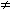
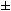
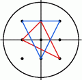
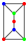
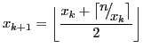
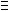

Problem 64
All square roots are periodic when written as continued fractions and can be written in the form:
1 |
|||
| a1 + | 1 |
||
| a2 + | 1 |
||
| a3 + ... | |||
For example, let us consider  23:
23:
1 |
= 4 + | 1 |
||
1 |
1 + | 7 |
||
If we continue we would get the following expansion:
1 |
||||
| 1 + | 1 |
|||
| 3 + | 1 |
|||
| 1 + | 1 |
|||
| 8 + ... | ||||
The process can be summarised as follows:
| a0 = 4, | 1 |
= | 7 |
= 1 + | 7 |
|
| a1 = 1, | 7 |
= | 7( 14 |
= 3 + | 2 |
|
| a2 = 3, | 2 |
= | 2( 14 |
= 1 + | 7 |
|
| a3 = 1, | 7 |
= | 7( 7 |
= 8 + | ||
| a4 = 8, | 1 |
= | 7 |
= 1 + | 7 |
|
| a5 = 1, | 7 |
= | 7( 14 |
= 3 + | 2 |
|
| a6 = 3, | 2 |
= | 2( 14 |
= 1 + | 7 |
|
| a7 = 1, | 7 |
= | 7( 7 |
= 8 + |
It can be seen that the sequence is repeating. For conciseness, we use the notation  23 = [4;(1,3,1,8)], to indicate that the block (1,3,1,8) repeats indefinitely.
23 = [4;(1,3,1,8)], to indicate that the block (1,3,1,8) repeats indefinitely.
The first ten continued fraction representations of (irrational) square roots are:
 2=[1;(2)], period=1
2=[1;(2)], period=1
 3=[1;(1,2)], period=2
3=[1;(1,2)], period=2
 5=[2;(4)], period=1
5=[2;(4)], period=1
 6=[2;(2,4)], period=2
6=[2;(2,4)], period=2
 7=[2;(1,1,1,4)], period=4
7=[2;(1,1,1,4)], period=4
 8=[2;(1,4)], period=2
8=[2;(1,4)], period=2
 10=[3;(6)], period=1
10=[3;(6)], period=1
 11=[3;(3,6)], period=2
11=[3;(3,6)], period=2
 12= [3;(2,6)], period=2
12= [3;(2,6)], period=2
 13=[3;(1,1,1,1,6)], period=5
13=[3;(1,1,1,1,6)], period=5
Exactly four continued fractions, for N  13, have an odd period.
13, have an odd period.
How many continued fractions for N  10000 have an odd period?
10000 have an odd period?
Problem 66
Consider quadratic Diophantine equations of the form:
x2 – Dy2 = 1
For example, when D=13, the minimal solution in x is 6492 – 13 1802 = 1.
1802 = 1.
It can be assumed that there are no solutions in positive integers when D is square.
By finding minimal solutions in x for D = {2, 3, 5, 6, 7}, we obtain the following:
32 – 2 22 = 1
22 = 1
22 – 3 12 = 1
12 = 1
92 – 5 42 = 1
42 = 1
52 – 6 22 = 1
22 = 1
82 – 7 32 = 1
32 = 1
Hence, by considering minimal solutions in x for D  7, the largest x is obtained when D=5.
7, the largest x is obtained when D=5.
Find the value of D  1000 in minimal solutions of x for which the largest value of x is obtained.
1000 in minimal solutions of x for which the largest value of x is obtained.
Problem 78
Let p(n) represent the number of different ways in which n coins can be separated into piles. For example, five coins can separated into piles in exactly seven different ways, so p(5)=7.
| OOOOO |
| OOOO O |
| OOO OO |
| OOO O O |
| OO OO O |
| OO O O O |
| O O O O O |
Find the least value of n for which p(n) is divisible by one million.
Problem 84
In the game, Monopoly, the standard board is set up in the following way:
| GO | A1 | CC1 | A2 | T1 | R1 | B1 | CH1 | B2 | B3 | JAIL |
| H2 | C1 | |||||||||
| T2 | U1 | |||||||||
| H1 | C2 | |||||||||
| CH3 | C3 | |||||||||
| R4 | R2 | |||||||||
| G3 | D1 | |||||||||
| CC3 | CC2 | |||||||||
| G2 | D2 | |||||||||
| G1 | D3 | |||||||||
| G2J | F3 | U2 | F2 | F1 | R3 | E3 | E2 | CH2 | E1 | FP |
A player starts on the GO square and adds the scores on two 6-sided dice to determine the number of squares they advance in a clockwise direction. Without any further rules we would expect to visit each square with equal probability: 2.5%. However, landing on G2J (Go To Jail), CC (community chest), and CH (chance) changes this distribution.
In addition to G2J, and one card from each of CC and CH, that orders the player to go directly to jail, if a player rolls three consecutive doubles, they do not advance the result of their 3rd roll. Instead they proceed directly to jail.
At the beginning of the game, the CC and CH cards are shuffled. When a player lands on CC or CH they take a card from the top of the respective pile and, after following the instructions, it is returned to the bottom of the pile. There are sixteen cards in each pile, but for the purpose of this problem we are only concerned with cards that order a movement; any instruction not concerned with movement will be ignored and the player will remain on the CC/CH square.
- Community Chest (2/16 cards):
- Advance to GO
- Go to JAIL
- Chance (10/16 cards):
- Advance to GO
- Go to JAIL
- Go to C1
- Go to E3
- Go to H2
- Go to R1
- Go to next R (railway company)
- Go to next R
- Go to next U (utility company)
- Go back 3 squares.
The heart of this problem concerns the likelihood of visiting a particular square. That is, the probability of finishing at that square after a roll. For this reason it should be clear that, with the exception of G2J for which the probability of finishing on it is zero, the CH squares will have the lowest probabilities, as 5/8 request a movement to another square, and it is the final square that the player finishes at on each roll that we are interested in. We shall make no distinction between "Just Visiting" and being sent to JAIL, and we shall also ignore the rule about requiring a double to "get out of jail", assuming that they pay to get out on their next turn.
By starting at GO and numbering the squares sequentially from 00 to 39 we can concatenate these two-digit numbers to produce strings that correspond with sets of squares.
Statistically it can be shown that the three most popular squares, in order, are JAIL (6.24%) = Square 10, E3 (3.18%) = Square 24, and GO (3.09%) = Square 00. So these three most popular squares can be listed with the six-digit modal string: 102400.
If, instead of using two 6-sided dice, two 4-sided dice are used, find the six-digit modal string.
Problem 86
A spider, S, sits in one corner of a cuboid room, measuring 6 by 5 by 3, and a fly, F, sits in the opposite corner. By travelling on the surfaces of the room the shortest "straight line" distance from S to F is 10 and the path is shown on the diagram.

However, there are up to three "shortest" path candidates for any given cuboid and the shortest route is not always integer.
By considering all cuboid rooms with integer dimensions, up to a maximum size of M by M by M, there are exactly 2060 cuboids for which the shortest distance is integer when M=100, and this is the least value of M for which the number of solutions first exceeds two thousand; the number of solutions is 1975 when M=99.
Find the least value of M such that the number of solutions first exceeds one million.
Problem 89
The rules for writing Roman numerals allow for many ways of writing each number (see FAQ: Roman Numerals). However, there is always a "best" way of writing a particular number.
For example, the following represent all of the legitimate ways of writing the number sixteen:
IIIIIIIIIIIIIIII
VIIIIIIIIIII
VVIIIIII
XIIIIII
VVVI
XVI
The last example being considered the most efficient, as it uses the least number of numerals.
The 11K text file, roman.txt (right click and 'Save Link/Target As...'), contains one thousand numbers written in valid, but not necessarily minimal, Roman numerals; that is, they are arranged in descending units and obey the subtractive pair rule (see FAQ for the definitive rules for this problem).
Find the number of characters saved by writing each of these in their minimal form.
Note: You can assume that all the Roman numerals in the file contain no more than four consecutive identical units.
Problem 90
Each of the six faces on a cube has a different digit (0 to 9) written on it; the same is done to a second cube. By placing the two cubes side-by-side in different positions we can form a variety of 2-digit numbers.
For example, the square number 64 could be formed:
In fact, by carefully choosing the digits on both cubes it is possible to display all of the square numbers below one-hundred: 01, 04, 09, 16, 25, 36, 49, 64, and 81.
For example, one way this can be achieved is by placing {0, 5, 6, 7, 8, 9} on one cube and {1, 2, 3, 4, 8, 9} on the other cube.
However, for this problem we shall allow the 6 or 9 to be turned upside-down so that an arrangement like {0, 5, 6, 7, 8, 9} and {1, 2, 3, 4, 6, 7} allows for all nine square numbers to be displayed; otherwise it would be impossible to obtain 09.
In determining a distinct arrangement we are interested in the digits on each cube, not the order.
{1, 2, 3, 4, 5, 6} is equivalent to {3, 6, 4, 1, 2, 5}
{1, 2, 3, 4, 5, 6} is distinct from {1, 2, 3, 4, 5, 9}
But because we are allowing 6 and 9 to be reversed, the two distinct sets in the last example both represent the extended set {1, 2, 3, 4, 5, 6, 9} for the purpose of forming 2-digit numbers.
How many distinct arrangements of the two cubes allow for all of the square numbers to be displayed?
Problem 98
By replacing each of the letters in the word CARE with 1, 2, 9, and 6 respectively, we form a square number: 1296 = 362. What is remarkable is that, by using the same digital substitutions, the anagram, RACE, also forms a square number: 9216 = 962. We shall call CARE (and RACE) a square anagram word pair and specify further that leading zeroes are not permitted, neither may a different letter have the same digital value as another letter.
Using words.txt (right click and 'Save Link/Target As...'), a 16K text file containing nearly two-thousand common English words, find all the square anagram word pairs (a palindromic word is NOT considered to be an anagram of itself).
What is the largest square number formed by any member of such a pair?
NOTE: All anagrams formed must be contained in the given text file.
Problem 101
If we are presented with the first k terms of a sequence it is impossible to say with certainty the value of the next term, as there are infinitely many polynomial functions that can model the sequence.
As an example, let us consider the sequence of cube numbers. This is defined by the generating function,
un = n3: 1, 8, 27, 64, 125, 216, ...
Suppose we were only given the first two terms of this sequence. Working on the principle that "simple is best" we should assume a linear relationship and predict the next term to be 15 (common difference 7). Even if we were presented with the first three terms, by the same principle of simplicity, a quadratic relationship should be assumed.
We shall define OP(k, n) to be the nth term of the optimum polynomial generating function for the first k terms of a sequence. It should be clear that OP(k, n) will accurately generate the terms of the sequence for n  k, and potentially the first incorrect term (FIT) will be OP(k, k+1); in which case we shall call it a bad OP (BOP).
k, and potentially the first incorrect term (FIT) will be OP(k, k+1); in which case we shall call it a bad OP (BOP).
As a basis, if we were only given the first term of sequence, it would be most sensible to assume constancy; that is, for n 2, OP(1, n) = u1.
Hence we obtain the following OPs for the cubic sequence:
| OP(1, n) = 1 | 1, 1, 1, 1, ... |
| OP(2, n) = 7n |
1, 8, 15, ... |
| OP(3, n) = 6n2 |
1, 8, 27, 58, ... |
| OP(4, n) = n3 | 1, 8, 27, 64, 125, ... |
Clearly no BOPs exist for k 4.
By considering the sum of FITs generated by the BOPs (indicated in red above), we obtain 1 + 15 + 58 = 74.
Consider the following tenth degree polynomial generating function:
un = 1  n + n2
n + n2  n3 + n4
n3 + n4  n5 + n6
n5 + n6  n7 + n8
n7 + n8  n9 + n10
n9 + n10
Find the sum of FITs for the BOPs.
Problem 103
Let S(A) represent the sum of elements in set A of size n. We shall call it a special sum set if for any two non-empty disjoint subsets, B and C, the following properties are true:
- S(B)  S(C); that is, sums of subsets cannot be equal.
- If B contains more elements than C then S(B)
 S(C).
S(C).
If S(A) is minimised for a given n, we shall call it an optimum special sum set. The first five optimum special sum sets are given below.
n = 1: {1}
n = 2: {1, 2}
n = 3: {2, 3, 4}
n = 4: {3, 5, 6, 7}
n = 5: {6, 9, 11, 12, 13}
It seems that for a given optimum set, A = {a1, a2, ... , an}, the next optimum set is of the form B = {b, a1+b, a2+b, ... ,an+b}, where b is the "middle" element on the previous row.
By applying this "rule" we would expect the optimum set for n = 6 to be A = {11, 17, 20, 22, 23, 24}, with S(A) = 117. However, this is not the optimum set, as we have merely applied an algorithm to provide a near optimum set. The optimum set for n = 6 is A = {11, 18, 19, 20, 22, 25}, with S(A) = 115 and corresponding set string: 111819202225.
Given that A is an optimum special sum set for n = 7, find its set string.
Problem 105
Let S(A) represent the sum of elements in set A of size n. We shall call it a special sum set if for any two non-empty disjoint subsets, B and C, the following properties are true:
- S(B) S(C); that is, sums of subsets cannot be equal.
- If B contains more elements than C then S(B) S(C).
For example, {81, 88, 75, 42, 87, 84, 86, 65} is not a special sum set because 65 + 87 + 88 = 75 + 81 + 84, whereas {157, 150, 164, 119, 79, 159, 161, 139, 158} satisfies both rules for all possible subset pair combinations and S(A) = 1286.
Using sets.txt (right click and "Save Link/Target As..."), a 4K text file with one-hundred sets containing seven to twelve elements (the two examples given above are the first two sets in the file), identify all the special sum sets, A1, A2, ..., Ak, and find the value of S(A1) + S(A2) + ... + S(Ak).
Problem 106
Let S(A) represent the sum of elements in set A of size n. We shall call it a special sum set if for any two non-empty disjoint subsets, B and C, the following properties are true:
- S(B) S(C); that is, sums of subsets cannot be equal.
- If B contains more elements than C then S(B) S(C).
For this problem we shall assume that a given set contains n strictly increasing elements and it already satisfies the second rule.
Surprisingly, out of the 25 possible subset pairs that can be obtained from a set for which n = 4, only 1 of these pairs need to be tested for equality (first rule). Similarly, when n = 7, only 70 out of the 966 subset pairs need to be tested.
For n = 12, how many of the 261625 subset pairs that can be obtained need to be tested for equality?
Problem 107
The following undirected network consists of seven vertices and twelve edges with a total weight of 243.

The same network can be represented by the matrix below.
| A | B | C | D | E | F | G | |
| A | - | 16 | 12 | 21 | - | - | - |
| B | 16 | - | - | 17 | 20 | - | - |
| C | 12 | - | - | 28 | - | 31 | - |
| D | 21 | 17 | 28 | - | 18 | 19 | 23 |
| E | - | 20 | - | 18 | - | - | 11 |
| F | - | - | 31 | 19 | - | - | 27 |
| G | - | - | - | 23 | 11 | 27 | - |
However, it is possible to optimise the network by removing some
edges and still ensure that all points on the network remain connected.
The network which achieves the maximum saving is shown below. It has a
weight of 93, representing a saving of 243  93 = 150 from the original network.
93 = 150 from the original network.
Using network.txt (right click and 'Save Link/Target As...'), a 6K text file containing a network with forty vertices, and given in matrix form, find the maximum saving which can be achieved by removing redundant edges whilst ensuring that the network remains connected.
Problem 109
In the game of darts a player throws three darts at a target board which is split into twenty equal sized sections numbered one to twenty.
The score of a dart is determined by the number of the region that the dart lands in. A dart landing outside the red/green outer ring scores zero. The black and cream regions inside this ring represent single scores. However, the red/green outer ring and middle ring score double and treble scores respectively.
At the centre of the board are two concentric circles called the bull region, or bulls-eye. The outer bull is worth 25 points and the inner bull is a double, worth 50 points.
There are many variations of rules but in the most popular game the players will begin with a score 301 or 501 and the first player to reduce their running total to zero is a winner. However, it is normal to play a "doubles out" system, which means that the player must land a double (including the double bulls-eye at the centre of the board) on their final dart to win; any other dart that would reduce their running total to one or lower means the score for that set of three darts is "bust".
When a player is able to finish on their current score it is called a "checkout" and the highest checkout is 170: T20 T20 D25 (two treble 20s and double bull).
There are exactly eleven distinct ways to checkout on a score of 6:
D3 |
||
| D1 | D2 | |
| S2 | D2 | |
| D2 | D1 | |
| S4 | D1 | |
| S1 | S1 | D2 |
| S1 | T1 | D1 |
| S1 | S3 | D1 |
| D1 | D1 | D1 |
| D1 | S2 | D1 |
| S2 | S2 | D1 |
Note that D1 D2 is considered different to D2 D1 as they finish on different doubles. However, the combination S1 T1 D1 is considered the same as T1 S1 D1.
In addition we shall not include misses in considering combinations; for example, D3 is the same as 0 D3 and 0 0 D3.
Incredibly there are 42336 distinct ways of checking out in total.
How many distinct ways can a player checkout with a score less than 100?
Problem 110
In the following equation x, y, and n are positive integers.
1 x |
+ | 1 y |
= | 1 n |
It can be verified that when n = 1260 there are 113 distinct solutions and this is the least value of n for which the total number of distinct solutions exceeds one hundred.
What is the least value of n for which the number of distinct solutions exceeds four million?
NOTE: This problem is a much more difficult version of problem 108 and as it is well beyond the limitations of a brute force approach it requires a clever implementation.
Problem 111
Considering 4-digit primes containing repeated digits it is clear that they cannot all be the same: 1111 is divisible by 11, 2222 is divisible by 22, and so on. But there are nine 4-digit primes containing three ones:
1117, 1151, 1171, 1181, 1511, 1811, 2111, 4111, 8111
We shall say that M(n, d) represents the maximum number of repeated digits for an n-digit prime where d is the repeated digit, N(n, d) represents the number of such primes, and S(n, d) represents the sum of these primes.
So M(4, 1) = 3 is the maximum number of repeated digits for a 4-digit prime where one is the repeated digit, there are N(4, 1) = 9 such primes, and the sum of these primes is S(4, 1) = 22275. It turns out that for d = 0, it is only possible to have M(4, 0) = 2 repeated digits, but there are N(4, 0) = 13 such cases.
In the same way we obtain the following results for 4-digit primes.
| Digit, d | M(4, d) | N(4, d) | S(4, d) |
| 0 | 2 | 13 | 67061 |
| 1 | 3 | 9 | 22275 |
| 2 | 3 | 1 | 2221 |
| 3 | 3 | 12 | 46214 |
| 4 | 3 | 2 | 8888 |
| 5 | 3 | 1 | 5557 |
| 6 | 3 | 1 | 6661 |
| 7 | 3 | 9 | 57863 |
| 8 | 3 | 1 | 8887 |
| 9 | 3 | 7 | 48073 |
For d = 0 to 9, the sum of all S(4, d) is 273700.
Find the sum of all S(10, d).
Problem 121
A bag contains one red disc and one blue disc. In a game of chance a player takes a disc at random and its colour is noted. After each turn the disc is returned to the bag, an extra red disc is added, and another disc is taken at random.
The player pays £1 to play and wins if they have taken more blue discs than red discs at the end of the game.
If the game is played for four turns, the probability of a player winning is exactly 11/120, and so the maximum prize fund the banker should allocate for winning in this game would be £10 before they would expect to incur a loss. Note that any payout will be a whole number of pounds and also includes the original £1 paid to play the game, so in the example given the player actually wins £9.
Find the maximum prize fund that should be allocated to a single game in which fifteen turns are played.
Problem 122
The most naive way of computing n15 requires fourteen multiplications:
n  n
n  ...
...  n = n15
n = n15
But using a "binary" method you can compute it in six multiplications:
n  n = n2
n = n2
n2  n2 = n4
n2 = n4
n4  n4 = n8
n4 = n8
n8  n4 = n12
n4 = n12
n12  n2 = n14
n2 = n14
n14  n = n15
n = n15
However it is yet possible to compute it in only five multiplications:
n  n = n2
n = n2
n2  n = n3
n = n3
n3  n3 = n6
n3 = n6
n6  n6 = n12
n6 = n12
n12  n3 = n15
n3 = n15
We shall define m(k) to be the minimum number of multiplications to compute nk; for example m(15) = 5.
For 1  k
k  200, find
200, find  m(k).
m(k).
Problem 126
The minimum number of cubes to cover every visible face on a cuboid measuring 3 x 2 x 1 is twenty-two.

If we then add a second layer to this solid it would require forty-six cubes to cover every visible face, the third layer would require seventy-eight cubes, and the fourth layer would require one-hundred and eighteen cubes to cover every visible face.
However, the first layer on a cuboid measuring 5 x 1 x 1 also requires twenty-two cubes; similarly the first layer on cuboids measuring 5 x 3 x 1, 7 x 2 x 1, and 11 x 1 x 1 all contain forty-six cubes.
We shall define C(n) to represent the number of cuboids that contain n cubes in one of its layers. So C(22) = 2, C(46) = 4, C(78) = 5, and C(118) = 8.
It turns out that 154 is the least value of n for which C(n) = 10.
Find the least value of n for which C(n) = 1000.
Problem 127
The radical of n, rad(n), is the product of distinct prime factors of n. For example, 504 = 23  32
32  7, so rad(504) = 2
7, so rad(504) = 2  3
3  7 = 42.
7 = 42.
We shall define the triplet of positive integers (a, b, c) to be an abc-hit if:
- GCD(a, b) = GCD(a, c) = GCD(b, c) = 1
- a
 b
b - a + b = c
- rad(abc) c
For example, (5, 27, 32) is an abc-hit, because:
- GCD(5, 27) = GCD(5, 32) = GCD(27, 32) = 1
- 5 27
- 5 + 27 = 32
- rad(4320) = 30 32
It turns out that abc-hits are quite rare and there are only thirty-one abc-hits for c  1000, with
1000, with  c = 12523.
c = 12523.
Find  c for c
c for c  120000.
120000.
Note: This problem has been changed recently, please check that you are using the right parameters.
Problem 128
A hexagonal tile with number 1 is surrounded by a ring of six hexagonal tiles, starting at "12 o'clock" and numbering the tiles 2 to 7 in an anti-clockwise direction.
New rings are added in the same fashion, with the next rings being numbered 8 to 19, 20 to 37, 38 to 61, and so on. The diagram below shows the first three rings.

By finding the difference between tile n and each its six neighbours we shall define PD(n) to be the number of those differences which are prime.
For example, working clockwise around tile 8 the differences are 12, 29, 11, 6, 1, and 13. So PD(8) = 3.
In the same way, the differences around tile 17 are 1, 17, 16, 1, 11, and 10, hence PD(17) = 2.
It can be shown that the maximum value of PD(n) is 3.
If all of the tiles for which PD(n) = 3 are listed in ascending order to form a sequence, the 10th tile would be 271.
Find the 2000th tile in this sequence.
Problem 129
A number consisting entirely of ones is called a repunit. We shall define R(k) to be a repunit of length k; for example, R(6) = 111111.
Given that n is a positive integer and GCD(n, 10) = 1, it can be shown that there always exists a value, k, for which R(k) is divisible by n, and let A(n) be the least such value of k; for example, A(7) = 6 and A(41) = 5.
The least value of n for which A(n) first exceeds ten is 17.
Find the least value of n for which A(n) first exceeds one-million.
Problem 130
A number consisting entirely of ones is called a repunit. We shall define R(k) to be a repunit of length k; for example, R(6) = 111111.
Given that n is a positive integer and GCD(n, 10) = 1, it can be shown that there always exists a value, k, for which R(k) is divisible by n, and let A(n) be the least such value of k; for example, A(7) = 6 and A(41) = 5.
You are given that for all primes, p  5, that p
5, that p  1 is divisible by A(p). For example, when p = 41, A(41) = 5, and 40 is divisible by 5.
1 is divisible by A(p). For example, when p = 41, A(41) = 5, and 40 is divisible by 5.
However, there are rare composite values for which this is also true; the first five examples being 91, 259, 451, 481, and 703.
Find the sum of the first twenty-five composite values of n for which
GCD(n, 10) = 1 and n  1 is divisible by A(n).
1 is divisible by A(n).
Problem 131
There are some prime values, p, for which there exists a positive integer, n, such that the expression n3 + n2p is a perfect cube.
For example, when p = 19, 83 + 82 19 = 123.
19 = 123.
What is perhaps most surprising is that for each prime with this property the value of n is unique, and there are only four such primes below one-hundred.
How many primes below one million have this remarkable property?
Problem 133
A number consisting entirely of ones is called a repunit. We shall define R(k) to be a repunit of length k; for example, R(6) = 111111.
Let us consider repunits of the form R(10n).
Although R(10), R(100), or R(1000) are not divisible by 17, R(10000) is divisible by 17. Yet there is no value of n for which R(10n) will divide by 19. In fact, it is remarkable that 11, 17, 41, and 73 are the only four primes below one-hundred that can be a factor of R(10n).
Find the sum of all the primes below one-hundred thousand that will never be a factor of R(10n).
Problem 134
Consider the consecutive primes p1 = 19 and p2 = 23. It can be verified that 1219 is the smallest number such that the last digits are formed by p1 whilst also being divisible by p2.
In fact, with the exception of p1 = 3 and p2 = 5, for every pair of consecutive primes, p2  p1, there exist values of n for which the last digits are formed by p1 and n is divisible by p2. Let S be the smallest of these values of n.
p1, there exist values of n for which the last digits are formed by p1 and n is divisible by p2. Let S be the smallest of these values of n.
Find  S for every pair of consecutive primes with 5
S for every pair of consecutive primes with 5  p1
p1  1000000.
1000000.
Problem 135
Given the positive integers, x, y, and z, are consecutive terms of an arithmetic progression, the least value of the positive integer, n, for which the equation, x2  y2
y2  z2 = n, has exactly two solutions is n = 27:
z2 = n, has exactly two solutions is n = 27:
342  272
272  202 = 122
202 = 122  92
92  62 = 27
62 = 27
It turns out that n = 1155 is the least value which has exactly ten solutions.
How many values of n less than one million have exactly ten distinct solutions?
Problem 136
The positive integers, x, y, and z, are consecutive terms of an arithmetic progression. Given that n is a positive integer, the equation, x2  y2
y2  z2 = n, has exactly one solution when n = 20:
z2 = n, has exactly one solution when n = 20:
132  102
102  72 = 20
72 = 20
In fact there are twenty-five values of n below one hundred for which the equation has a unique solution.
How many values of n less than fifty million have exactly one solution?
Problem 137
Consider the infinite polynomial series AF(x) = xF1 + x2F2 + x3F3 + ..., where Fk is the kth term in the Fibonacci sequence: 1, 1, 2, 3, 5, 8, ... ; that is, Fk = Fk 1 + Fk
1 + Fk 2, F1 = 1 and F2 = 1.
2, F1 = 1 and F2 = 1.
For this problem we shall be interested in values of x for which AF(x) is a positive integer.
| Surprisingly AF(1/2) | = | (1/2).1 + (1/2)2.1 + (1/2)3.2 + (1/2)4.3 + (1/2)5.5 + ... |
| = | 1/2 + 1/4 + 2/8 + 3/16 + 5/32 + ... | |
| = | 2 |
The corresponding values of x for the first five natural numbers are shown below.
| x | AF(x) |
| 1 | |
| 1/2 | 2 |
| ( | 3 |
| ( | 4 |
| ( | 5 |
We shall call AF(x) a golden nugget if x is rational, because they become increasingly rarer; for example, the 10th golden nugget is 74049690.
Find the 15th golden nugget.
Problem 138
Consider the isosceles triangle with base length, b = 16, and legs, L = 17.

By using the Pythagorean theorem it can be seen that the height of the triangle, h =  (172
(172  82) = 15, which is one less than the base length.
82) = 15, which is one less than the base length.
With b = 272 and L = 305, we get h = 273, which is one more than the base length, and this is the second smallest isosceles triangle with the property that h = b  1.
Find  L for the twelve smallest isosceles triangles for which h = b 1 and b, L are positive integers.
L for the twelve smallest isosceles triangles for which h = b 1 and b, L are positive integers.
Problem 139
Let (a, b, c) represent the three sides of a right angle triangle with integral length sides. It is possible to place four such triangles together to form a square with length c.
For example, (3, 4, 5) triangles can be placed together to form a 5 by 5 square with a 1 by 1 hole in the middle and it can be seen that the 5 by 5 square can be tiled with twenty-five 1 by 1 squares.
However, if (5, 12, 13) triangles were used then the hole would measure 7 by 7 and these could not be used to tile the 13 by 13 square.
Given that the perimeter of the right triangle is less than one-hundred million, how many Pythagorean triangles would allow such a tiling to take place?
Problem 140
Consider the infinite polynomial series AG(x) = xG1 + x2G2 + x3G3 + ..., where Gk is the kth term of the second order recurrence relation Gk = Gk 1 + Gk
1 + Gk 2, G1 = 1 and G2 = 4; that is, 1, 4, 5, 9, 14, 23, ... .
2, G1 = 1 and G2 = 4; that is, 1, 4, 5, 9, 14, 23, ... .
For this problem we shall be concerned with values of x for which AG(x) is a positive integer.
The corresponding values of x for the first five natural numbers are shown below.
| x | AG(x) |
| ( | 1 |
| 2/5 | 2 |
| ( | 3 |
| ( | 4 |
| 1/2 | 5 |
We shall call AG(x) a golden nugget if x is rational, because they become increasingly rarer; for example, the 20th golden nugget is 211345365.
Find the sum of the first thirty golden nuggets.
Problem 141
A positive integer, n, is divided by d and the quotient and remainder are q and r respectively. In addition d, q, and r are consecutive positive integer terms in a geometric sequence, but not necessarily in that order.
For example, 58 divided by 6 has quotient 9 and remainder 4. It can
also be seen that 4, 6, 9 are consecutive terms in a geometric sequence
(common ratio 3/2).
We will call such numbers, n, progressive.
Some progressive numbers, such as 9 and 10404 = 1022, happen to also be perfect squares.
The sum of all progressive perfect squares below one hundred thousand is 124657.
Find the sum of all progressive perfect squares below one trillion (1012).
Problem 142
Find the smallest x + y + z with integers x  y
y  z
z  0 such that x + y, x
0 such that x + y, x  y, x + z, x
y, x + z, x  z, y + z, y
z, y + z, y  z are all perfect squares.
z are all perfect squares.
Problem 143
Let ABC be a triangle with all interior angles being less than 120 degrees. Let X be any point inside the triangle and let XA = p, XB = q, and XC = r.
Fermat challenged Torricelli to find the position of X such that p + q + r was minimised.
Torricelli was able to prove that if equilateral triangles AOB, BNC and AMC are constructed on each side of triangle ABC, the circumscribed circles of AOB, BNC, and AMC will intersect at a single point, T, inside the triangle. Moreover he proved that T, called the Torricelli/Fermat point, minimises p + q + r. Even more remarkable, it can be shown that when the sum is minimised, AN = BM = CO = p + q + r and that AN, BM and CO also intersect at T.

If the sum is minimised and a, b, c, p, q and r are all positive integers we shall call triangle ABC a Torricelli triangle. For example, a = 399, b = 455, c = 511 is an example of a Torricelli triangle, with p + q + r = 784.
Find the sum of all distinct values of p + q + r  120000 for Torricelli triangles.
120000 for Torricelli triangles.
Note: This problem has been changed recently, please check that you are using the right parameters.
Problem 144
In laser physics, a "white cell" is a mirror system that acts as a delay line for the laser beam. The beam enters the cell, bounces around on the mirrors, and eventually works its way back out.
The specific white cell we will be considering is an ellipse with the equation 4x2 + y2 = 100
The section corresponding to  0.01
0.01  x
x  +0.01 at the top is missing, allowing the light to enter and exit through the hole.
+0.01 at the top is missing, allowing the light to enter and exit through the hole.


The light beam in this problem starts at the point (0.0,10.1) just outside the white cell, and the beam first impacts the mirror at (1.4,-9.6).
Each time the laser beam hits the surface of the ellipse, it follows the usual law of reflection "angle of incidence equals angle of reflection." That is, both the incident and reflected beams make the same angle with the normal line at the point of incidence.
In the figure on the left, the red line shows the first two points of contact between the laser beam and the wall of the white cell; the blue line shows the line tangent to the ellipse at the point of incidence of the first bounce.
The slope m of the tangent line at any point (x,y) of the given ellipse is: m =  4x/y
4x/y
The normal line is perpendicular to this tangent line at the point of incidence.
The animation on the right shows the first 10 reflections of the beam.
How many times does the beam hit the internal surface of the white cell before exiting?
Problem 146
The smallest positive integer n for which the numbers n2+1, n2+3, n2+7, n2+9, n2+13, and n2+27 are consecutive primes is 10. The sum of all such integers n below one-million is 1242490.
What is the sum of all such integers n below 150 million?
Problem 147
In a 3x2 cross-hatched grid, a total of 37 different rectangles could be situated within that grid as indicated in the sketch.

There are 5 grids smaller than 3x2, vertical and horizontal dimensions being important, i.e. 1x1, 2x1, 3x1, 1x2 and 2x2. If each of them is cross-hatched, the following number of different rectangles could be situated within those smaller grids:
1x1: 1
2x1: 4
3x1: 8
1x2: 4
2x2: 18
Adding those to the 37 of the 3x2 grid, a total of 72 different rectangles could be situated within 3x2 and smaller grids.
How many different rectangles could be situated within 47x43 and smaller grids?
Problem 148
We can easily verify that none of the entries in the first seven rows of Pascal's triangle are divisible by 7:
| 1 | ||||||||||||
| 1 | 1 | |||||||||||
| 1 | 2 | 1 | ||||||||||
| 1 | 3 | 3 | 1 | |||||||||
| 1 | 4 | 6 | 4 | 1 | ||||||||
| 1 | 5 | 10 | 10 | 5 | 1 | |||||||
| 1 | 6 | 15 | 20 | 15 | 6 | 1 |
However, if we check the first one hundred rows, we will find that only 2361 of the 5050 entries are not divisible by 7.
Find the number of entries which are not divisible by 7 in the first one billion (109) rows of Pascal's triangle.
Problem 149
Looking at the table below, it is easy to verify that the maximum possible sum of adjacent numbers in any direction (horizontal, vertical, diagonal or anti-diagonal) is 16 (= 8 + 7 + 1).
| 5 | 3 | 2 | |
| 9 | 5 | 1 | |
| 3 | 2 | 7 | 3 |
| 8 | 8 |
Now, let us repeat the search, but on a much larger scale:
First, generate four million pseudo-random numbers using a specific form of what is known as a "Lagged Fibonacci Generator":
For 1  k
k  55, sk = [100003
55, sk = [100003  200003k + 300007k3] (modulo 1000000)
200003k + 300007k3] (modulo 1000000)  500000.
500000.
For 56  k
k  4000000, sk = [sk
4000000, sk = [sk 24 + sk
24 + sk 55 + 1000000] (modulo 1000000)
55 + 1000000] (modulo 1000000)  500000.
500000.
Thus, s10 =  393027 and s100 = 86613.
393027 and s100 = 86613.
The terms of s are then arranged in a 2000 2000
table, using the first 2000 numbers to fill the first row
(sequentially), the next 2000 numbers to fill the second row, and so on.
2000
table, using the first 2000 numbers to fill the first row
(sequentially), the next 2000 numbers to fill the second row, and so on.
Finally, find the greatest sum of (any number of) adjacent entries in any direction (horizontal, vertical, diagonal or anti-diagonal).
Problem 150
In a triangular array of positive and negative integers, we wish to find a sub-triangle such that the sum of the numbers it contains is the smallest possible.
In the example below, it can be easily verified that the marked triangle satisfies this condition having a sum of  42.
42.

We wish to make such a triangular array with one thousand rows, so we generate 500500 pseudo-random numbers sk in the range 219, using a type of random number generator (known as a Linear Congruential Generator) as follows:
t := 0
for k = 1 up to k = 500500:
t := (615949*t + 797807) modulo 220
sk := t 219
219
Thus: s1 = 273519, s2 =  153582, s3 = 450905 etc
153582, s3 = 450905 etc
Our triangular array is then formed using the pseudo-random numbers thus:
s2 s3
s4 s5 s6
s7 s8 s9 s10
...
Sub-triangles can start at any element of the array and extend down
as far as we like (taking-in the two elements directly below it from
the next row, the three elements directly below from the row after
that, and so on).
The "sum of a sub-triangle" is defined as the sum of all the elements it contains.
Find the smallest possible sub-triangle sum.
Problem 151
A printing shop runs 16 batches (jobs) every week and each batch requires a sheet of special colour-proofing paper of size A5.
Every Monday morning, the foreman opens a new envelope, containing a large sheet of the special paper with size A1.
He proceeds to cut it in half, thus getting two sheets of size A2. Then he cuts one of them in half to get two sheets of size A3 and so on until he obtains the A5-size sheet needed for the first batch of the week.
All the unused sheets are placed back in the envelope.

At the beginning of each subsequent batch, he takes from the envelope one sheet of paper at random. If it is of size A5, he uses it. If it is larger, he repeats the 'cut-in-half' procedure until he has what he needs and any remaining sheets are always placed back in the envelope.
Excluding the first and last batch of the week, find the expected number of times (during each week) that the foreman finds a single sheet of paper in the envelope.
Give your answer rounded to six decimal places using the format x.xxxxxx .
Problem 152
There are several ways to write the number 1/2 as a sum of inverse squares using distinct integers.
For instance, the numbers {2,3,4,5,7,12,15,20,28,35} can be used:

In fact, only using integers between 2 and 45 inclusive, there are exactly three ways to do it, the remaining two being: {2,3,4,6,7,9,10,20,28,35,36,45} and {2,3,4,6,7,9,12,15,28,30,35,36,45}.
How many ways are there to write the number 1/2 as a sum of inverse squares using distinct integers between 2 and 80 inclusive?
Problem 153
As we all know the equation x2=-1 has no solutions for real x.
If we however introduce the imaginary number i this equation has two solutions: x=i and x=-i.
If we go a step further the equation (x-3)2=-4 has two complex solutions: x=3+2i and x=3-2i.
x=3+2i and x=3-2i are called each others' complex conjugate.
Numbers of the form a+bi are called complex numbers.
In general a+bi and a bi are each other's complex conjugate.
bi are each other's complex conjugate.
A Gaussian Integer is a complex number a+bi such that both a and b are integers.
The regular integers are also Gaussian integers (with b=0).
To distinguish them from Gaussian integers with b 0 we call such integers "rational integers."
A Gaussian integer is called a divisor of a rational integer n if the result is also a Gaussian integer.
If for example we divide 5 by 1+2i we can simplify  in the following manner:
in the following manner:
Multiply numerator and denominator by the complex conjugate of 1+2i: 1 2i.
2i.
The result is
 .
.
So 1+2i is a divisor of 5.
Note that 1+i is not a divisor of 5 because  .
.
Note also that if the Gaussian Integer (a+bi) is a divisor of a rational integer n, then its complex conjugate (a bi) is also a divisor of n.
bi) is also a divisor of n.
In fact, 5 has six divisors such that the real part is positive: {1, 1 + 2i, 1  2i, 2 + i, 2
2i, 2 + i, 2  i, 5}.
i, 5}.
The following is a table of all of the divisors for the first five positive rational integers:
| n | Gaussian integer divisors with positive real part | Sum s(n) of these divisors |
| 1 | 1 | 1 |
| 2 | 1, 1+i, 1-i, 2 | 5 |
| 3 | 1, 3 | 4 |
| 4 | 1, 1+i, 1-i, 2, 2+2i, 2-2i,4 | 13 |
| 5 | 1, 1+2i, 1-2i, 2+i, 2-i, 5 | 12 |
For divisors with positive real parts, then, we have:  .
.
For 1  n
n  105,
105,  s(n)=17924657155.
s(n)=17924657155.
What is  s(n) for 1
s(n) for 1  n
n  108?
108?
Problem 154
A triangular pyramid is constructed using spherical balls so that each ball rests on exactly three balls of the next lower level.

Then, we calculate the number of paths leading from the apex to each position:
A path starts at the apex and progresses downwards to any of the three spheres directly below the current position.
Consequently, the number of paths to reach a certain position is the sum of the numbers immediately above it (depending on the position, there are up to three numbers above it).
The result is Pascal's pyramid and the numbers at each level n are the coefficients of the trinomial expansion (x + y + z)n.
How many coefficients in the expansion of (x + y + z)200000 are multiples of 1012?
Problem 155
An electric circuit uses exclusively identical capacitors of the same value C.
The capacitors can be connected in series or in parallel to form
sub-units, which can then be connected in series or in parallel with
other capacitors or other sub-units to form larger sub-units, and so on
up to a final circuit.
Using this simple procedure and up to n identical capacitors, we can make circuits having a range of different total capacitances. For example, using up to n=3 capacitors of 60  F each, we can obtain the following 7 distinct total capacitance values:
F each, we can obtain the following 7 distinct total capacitance values:

If we denote by D(n) the number of distinct total capacitance values we can obtain when using up to n equal-valued capacitors and the simple procedure described above, we have: D(1)=1, D(2)=3, D(3)=7 ...
Find D(18).
Reminder : When connecting capacitors C1, C2 etc in parallel, the total capacitance is CT = C1 + C2 +...,
whereas when connecting them in series, the overall capacitance is given by:

Problem 156
Starting from zero the natural numbers are written down in base 10 like this:
0 1 2 3 4 5 6 7 8 9 10 11 12....
Consider the digit d=1. After we write down each number n, we will update the number of ones that have occurred and call this number f(n,1). The first values for f(n,1), then, are as follows:
| n | f(n,1) |
| 0 | 0 |
| 1 | 1 |
| 2 | 1 |
| 3 | 1 |
| 4 | 1 |
| 5 | 1 |
| 6 | 1 |
| 7 | 1 |
| 8 | 1 |
| 9 | 1 |
| 10 | 2 |
| 11 | 4 |
| 12 | 5 |
Note that f(n,1) never equals 3.
So the first two solutions of the equation f(n,1)=n are n=0 and n=1. The next solution is n=199981.
In the same manner the function f(n,d) gives the total number of digits d that have been written down after the number n has been written.
In fact, for every digit d 0, 0 is the first solution of the equation f(n,d)=n.
Let s(d) be the sum of all the solutions for which f(n,d)=n.
You are given that s(1)=22786974071.
Find  s(d) for 1
s(d) for 1  d
d  9.
9.
Note: if, for some n, f(n,d)=n for more than one value of d this value of n is counted again for every value of d for which f(n,d)=n.
Problem 157
Consider the diophantine equation 1/a+1/b= p/10n with a, b, p, n positive integers and a  b.
b.
For n=1 this equation has 20 solutions that are listed below:
| 1/1+1/1=20/10 | 1/1+1/2=15/10 | 1/1+1/5=12/10 | 1/1+1/10=11/10 | 1/2+1/2=10/10 |
| 1/2+1/5=7/10 | 1/2+1/10=6/10 | 1/3+1/6=5/10 | 1/3+1/15=4/10 | 1/4+1/4=5/10 |
| 1/4+1/20=3/10 | 1/5+1/5=4/10 | 1/5+1/10=3/10 | 1/6+1/30=2/10 | 1/10+1/10=2/10 |
| 1/11+1/110=1/10 | 1/12+1/60=1/10 | 1/14+1/35=1/10 | 1/15+1/30=1/10 | 1/20+1/20=1/10 |
How many solutions has this equation for 1  n
n  9?
9?
Problem 158
Taking three different letters from the 26 letters of the alphabet, character strings of length three can be formed.
Examples are 'abc', 'hat' and 'zyx'.
When we study these three examples we see that for 'abc' two characters come lexicographically after its neighbour to the left.
For 'hat' there is exactly one character that comes lexicographically
after its neighbour to the left. For 'zyx' there are zero characters
that come lexicographically after its neighbour to the left.
In all there are 10400 strings of length 3 for which exactly one
character comes lexicographically after its neighbour to the left.
We now consider strings of n  26 different characters from the alphabet.
26 different characters from the alphabet.
For every n, p(n) is the number of strings of length n for which exactly one character comes lexicographically after its neighbour to the left.
What is the maximum value of p(n)?
Problem 159
A composite number can be factored many different ways. For instance, not including multiplication by one, 24 can be factored in 7 distinct ways:
24 = 2x3x4
24 = 2x2x6
24 = 4x6
24 = 3x8
24 = 2x12
24 = 24
Recall that the digital root of a number, in base 10, is found by adding together the digits of that number, and repeating that process until a number is arrived at that is less than 10. Thus the digital root of 467 is 8.
We shall call a Digital Root Sum (DRS) the sum of the digital roots of the individual factors of our number.
The chart below demonstrates all of the DRS values for 24.
| Factorisation | Digital Root Sum |
|---|---|
2x2x2x3 |
9 |
2x3x4 |
9 |
2x2x6 |
10 |
4x6 |
10 |
3x8 |
11 |
2x12 |
5 |
24 |
6 |
The maximum Digital Root Sum of 24 is 11.
The function mdrs(n) gives the maximum Digital Root Sum of n. So mdrs(24)=11.
Find  mdrs(n) for 1
mdrs(n) for 1  n
n  1,000,000.
1,000,000.
Problem 160
For any N, let f(N) be the last five digits before the trailing zeroes in N!.
For example,
9! = 362880 so f(9)=36288
10! = 3628800 so f(10)=36288
20! = 2432902008176640000 so f(20)=17664
Find f(1,000,000,000,000)
Problem 161
A triomino is a shape consisting of three squares joined via the edges. There are two basic forms:

If all possible orientations are taken into account there are six:

Any n by m grid for which nxm is divisible by 3 can be tiled with triominoes.
If we consider tilings that can be obtained by reflection or rotation
from another tiling as different there are 41 ways a 2 by 9 grid can be
tiled with triominoes:

In how many ways can a 9 by 12 grid be tiled in this way by triominoes?
Problem 162
In the hexadecimal number system numbers are represented using 16 different digits:
The hexadecimal number AF when written in the decimal number system equals 10x16+15=175.
In the 3-digit hexadecimal numbers 10A, 1A0, A10, and A01 the digits 0,1 and A are all present.
Like numbers written in base ten we write hexadecimal numbers without leading zeroes.
How many hexadecimal numbers containing at most sixteen hexadecimal
digits exist with all of the digits 0,1, and A present at least once?
Give your answer as a hexadecimal number.
(A,B,C,D,E and F in upper case, without any leading or trailing code that marks the number as hexadecimal and without leading zeroes , e.g. 1A3F and not: 1a3f and not 0x1a3f and not $1A3F and not #1A3F and not 0000001A3F)
Problem 163
Consider an equilateral triangle in which straight lines are drawn from each vertex to the middle of the opposite side, such as in the size 1 triangle in the sketch below.
Sixteen triangles of either different shape or size or orientation or location can now be observed in that triangle. Using size 1 triangles as building blocks, larger triangles can be formed, such as the size 2 triangle in the above sketch. One-hundred and four triangles of either different shape or size or orientation or location can now be observed in that size 2 triangle.
It can be observed that the size 2 triangle contains 4 size 1 triangle building blocks. A size 3 triangle would contain 9 size 1 triangle building blocks and a size n triangle would thus contain n2 size 1 triangle building blocks.
If we denote T(n) as the number of triangles present in a triangle of size n, then
T(1) = 16
T(2) = 104
Find T(36).
Problem 165
A segment is uniquely defined by its two endpoints.
By considering two line segments in plane geometry there are three possibilities:
the segments have zero points, one point, or infinitely many points in common.
Moreover when two segments have exactly one point in common it might
be the case that that common point is an endpoint of either one of the
segments or of both. If a common point of two segments is not an
endpoint of either of the segments it is an interior point of both
segments.
We will call a common point T of two segments L1 and L2 a true intersection point of L1 and L2 if T is the only common point of L1 and L2 and T is an interior point of both segments.
Consider the three segments L1, L2, and L3:
L1: (27, 44) to (12, 32)
L2: (46, 53) to (17, 62)
L3: (46, 70) to (22, 40)
It can be verified that line segments L2 and L3 have a true intersection point. We note that as the one of the end points of L3: (22,40) lies on L1 this is not considered to be a true point of intersection. L1 and L2 have no common point. So among the three line segments, we find one true intersection point.
Now let us do the same for 5000 line segments. To this end, we generate 20000 numbers using the so-called "Blum Blum Shub" pseudo-random number generator.
s0 = 290797
sn+1 = sn sn (modulo 50515093)
sn (modulo 50515093)
tn = sn (modulo 500)
To create each line segment, we use four consecutive numbers tn. That is, the first line segment is given by:
(t1, t2) to (t3, t4)
The first four numbers computed according to the above generator should be: 27, 144, 12 and 232. The first segment would thus be (27,144) to (12,232).
How many distinct true intersection points are found among the 5000 line segments?
Problem 166
A 4x4 grid is filled with digits d, 0  d
d  9.
9.
It can be seen that in the grid
6 3 3 0
5 0 4 3
0 7 1 4
1 2 4 5
the sum of each row and each column has the value 12. Moreover the sum of each diagonal is also 12.
In how many ways can you fill a 4x4 grid with the digits d, 0  d
d  9 so that each row, each column, and both diagonals have the same sum?
9 so that each row, each column, and both diagonals have the same sum?
Problem 167
For two positive integers a and b, the Ulam sequence U(a,b) is defined by U(a,b)1 = a, U(a,b)2 = b and for k > 2, U(a,b)k is the smallest integer greater than U(a,b)(k-1) which can be written in exactly one way as the sum of two distinct previous members of U(a,b).
For example, the sequence U(1,2) begins with
1, 2, 3 = 1 + 2, 4 = 1 + 3, 6 = 2 + 4, 8 = 2 + 6, 11 = 3 + 8;
5 does not belong to it because 5 = 1 + 4 = 2 + 3 has two
representations as the sum of two previous members, likewise 7 = 1 + 6
= 3 + 4.
Find  U(2,2n+1)k for 2
U(2,2n+1)k for 2  n
n  10, where k = 1011.
10, where k = 1011.
Problem 168
Consider the number 142857. We can right-rotate this number by moving the last digit (7) to the front of it, giving us 714285.
It can be verified that 714285=5 142857.
142857.
This demonstrates an unusual property of 142857: it is a divisor of its right-rotation.
Find the last 5 digits of the sum of all integers n, 10  n
n  10100, that have this property.
10100, that have this property.
Problem 169
Define f(0)=1 and f(n) to be the number of different ways n can be expressed as a sum of integer powers of 2 using each power no more than twice.
For example, f(10)=5 since there are five different ways to express 10:
1 + 1 + 8
1 + 1 + 4 + 4
1 + 1 + 2 + 2 + 4
2 + 4 + 4
2 + 8
What is f(1025)?
Problem 170
Take the number 6 and multiply it by each of 1273 and 9854:
6  1273 = 7638
1273 = 7638
6  9854 = 59124
9854 = 59124
By concatenating these products we get the 1 to 9 pandigital 763859124. We will call 763859124 the "concatenated product of 6 and (1273,9854)". Notice too, that the concatenation of the input numbers, 612739854, is also 1 to 9 pandigital.
The same can be done for 0 to 9 pandigital numbers.
What is the largest 0 to 9 pandigital 10-digit concatenated product of an integer with two or more other integers, such that the concatenation of the input numbers is also a 0 to 9 pandigital 10-digit number?
Problem 171
For a positive integer n, let f(n) be the sum of the squares of the digits (in base 10) of n, e.g.
f(3) = 32 = 9,
f(25) = 22 + 52 = 4 + 25 = 29,
f(442) = 42 + 42 + 22 = 16 + 16 + 4 = 36
Find the last nine digits of the sum of all n, 0  n
n  1020, such that f(n) is a perfect square.
1020, such that f(n) is a perfect square.
Problem 173
We shall define a square lamina to be a square outline with a square "hole" so that the shape possesses vertical and horizontal symmetry. For example, using exactly thirty-two square tiles we can form two different square laminae:
With one-hundred tiles, and not necessarily using all of the tiles at one time, it is possible to form forty-one different square laminae.
Using up to one million tiles how many different square laminae can be formed?
Problem 174
We shall define a square lamina to be a square outline with a square "hole" so that the shape possesses vertical and horizontal symmetry.
Given eight tiles it is possible to form a lamina in only one way: 3x3 square with a 1x1 hole in the middle. However, using thirty-two tiles it is possible to form two distinct laminae.
If t represents the number of tiles used, we shall say that t = 8 is type L(1) and t = 32 is type L(2).
Let N(n) be the number of t  1000000 such that t is type L(n); for example, N(15) = 832.
1000000 such that t is type L(n); for example, N(15) = 832.
What is  N(n) for 1
N(n) for 1  n
n  10?
10?
Problem 175
For example, f(10)=5 since there are five different ways to express 10:
10 = 8+2 = 8+1+1 = 4+4+2 = 4+2+2+1+1 = 4+4+1+1
It can be shown that for every fraction p/q (p
f(n)/f(n-1)=p/q.
For instance, the smallest n for which f(n)/f(n-1)=13/17 is 241.
The binary expansion of 241 is 11110001.
Reading this binary number from the most significant bit to the least significant bit there are 4 one's, 3 zeroes and 1 one. We shall call the string 4,3,1 the Shortened Binary Expansion of 241.
Find the Shortened Binary Expansion of the smallest n for which
f(n)/f(n-1)=123456789/987654321.
Give your answer as comma separated integers, without any whitespaces.
Problem 176
The four rectangular triangles with sides (9,12,15), (12,16,20), (5,12,13) and (12,35,37) all have one of the shorter sides (catheti) equal to 12. It can be shown that no other integer sided rectangular triangle exists with one of the catheti equal to 12.
Find the smallest integer that can be the length of a cathetus of exactly 47547 different integer sided rectangular triangles.
Problem 177
Let ABCD be a convex quadrilateral, with diagonals AC and BD. At each vertex the diagonal makes an angle with each of the two sides, creating eight corner angles.

For example, at vertex A, the two angles are CAD, CAB.
We call such a quadrilateral for which all eight corner angles have integer values when measured in degrees an "integer angled quadrilateral". An example of an integer angled quadrilateral is a square, where all eight corner angles are 45°. Another example is given by DAC = 20°, BAC = 60°, ABD = 50°, CBD = 30°, BCA = 40°, DCA = 30°, CDB = 80°, ADB = 50°.
What is the total number of non-similar integer angled quadrilaterals?
Note: In your calculations you may assume that a calculated angle is integral if it is within a tolerance of 10-9 of an integer value.
Problem 178
It can be seen that each pair of consecutive digits of 45656 has a difference of one.
A number for which every pair of consecutive digits has a difference of one is called a step number.
A pandigital number contains every decimal digit from 0 to 9 at least once.
How many pandigital step numbers less than 1040 are there?
Problem 180
For any integer n, consider the three functions
f1,n(x,y,z) = xn+1 + yn+1  zn+1
zn+1
f2,n(x,y,z) = (xy + yz + zx)*(xn-1 + yn-1  zn-1)
zn-1)
f3,n(x,y,z) = xyz*(xn-2 + yn-2  zn-2)
zn-2)
and their combination
fn(x,y,z) = f1,n(x,y,z) + f2,n(x,y,z)  f3,n(x,y,z)
f3,n(x,y,z)
We call (x,y,z) a golden triple of order k if x, y, and z are all rational numbers of the form a / b with
0  a
a  b
b  k and there is (at least) one integer n, so that fn(x,y,z) = 0.
k and there is (at least) one integer n, so that fn(x,y,z) = 0.
Let s(x,y,z) = x + y + z.
Let t = u / v be the sum of all distinct s(x,y,z) for all golden triples (x,y,z) of order 35.
All the s(x,y,z) and t must be in reduced form.
Find u + v.
Problem 181
Having three black objects B and one white object W they can be grouped in 7 ways like this:
| (BBBW) | (B,BBW) | (B,B,BW) | (B,B,B,W) | (B,BB,W) | (BBB,W) | (BB,BW) |
In how many ways can sixty black objects B and forty white objects W be thus grouped?
Problem 182
The RSA encryption is based on the following procedure:
Generate two distinct primes p and q.
Compute n=pq and φ=(p-1)(q-1).
Find an integer e, 1 e
e φ, such that gcd(e,φ)=1.
φ, such that gcd(e,φ)=1.
A message in this system is a number in the interval [0,n-1].
A text to be encrypted is then somehow converted to messages (numbers in the interval [0,n-1]).
To encrypt the text, for each message, m, c=me mod n is calculated.
To decrypt the text, the following procedure is needed: calculate d such that ed=1 mod φ, then for each encrypted message, c, calculate m=cd mod n.
There exist values of e and m such that me mod n=m.
We call messages m for which me mod n=m unconcealed messages.
An issue when choosing e is that there should not be too many unconcealed messages.
For instance, let p=19 and q=37.
Then n=19*37=703 and φ=18*36=648.
If we choose e=181, then, although gcd(181,648)=1 it turns out that all possible messages
m (0 m
m n-1) are unconcealed when calculating me mod n.
n-1) are unconcealed when calculating me mod n.
For any valid choice of e there exist some unconcealed messages.
It's important that the number of unconcealed messages is at a minimum.
Choose p=1009 and q=3643.
Find the sum of all values of e, 1 e
e φ(1009,3643) and gcd(e,φ)=1, so that the number of unconcealed messages for this value of e is at a minimum.
φ(1009,3643) and gcd(e,φ)=1, so that the number of unconcealed messages for this value of e is at a minimum.
Problem 183
Let N be a positive integer and let N be split into k equal parts, r = N/k, so that N = r + r + ... + r.
Let P be the product of these parts, P = r  r
r  ...
...  r = rk.
r = rk.
For example, if 11 is split into five equal parts, 11 = 2.2 + 2.2 + 2.2 + 2.2 + 2.2, then P = 2.25 = 51.53632.
Let M(N) = Pmax for a given value of N.
It turns out that the maximum for N = 11 is found by splitting eleven into four equal parts which leads to Pmax = (11/4)4; that is, M(11) = 14641/256 = 57.19140625, which is a terminating decimal.
However, for N = 8 the maximum is achieved by splitting it into three equal parts, so M(8) = 512/27, which is a non-terminating decimal.
Let D(N) = N if M(N) is a non-terminating decimal and D(N) = -N if M(N) is a terminating decimal.
For example, ΣD(N) for 5  N
N  100 is 2438.
100 is 2438.
Find ΣD(N) for 5  N
N  10000.
10000.
Problem 184
Consider the set Ir of points (x,y) with integer co-ordinates in the interior of the circle with radius r, centered at the origin, i.e. x2 + y2  r2.
r2.
For a radius of 2, I2 contains the nine points (0,0), (1,0), (1,1), (0,1), (-1,1), (-1,0), (-1,-1), (0,-1) and (1,-1). There are eight triangles having all three vertices in I2 which contain the origin in the interior. Two of them are shown below, the others are obtained from these by rotation.

For a radius of 3, there are 360 triangles containing the origin in the interior and having all vertices in I3 and for I5 the number is 10600.
How many triangles are there containing the origin in the interior and having all three vertices in I105?
Problem 185
The game Number Mind is a variant of the well known game Master Mind.
Instead of coloured pegs, you have to guess a secret sequence of digits. After each guess you're only told in how many places you've guessed the correct digit. So, if the sequence was 1234 and you guessed 2036, you'd be told that you have one correct digit; however, you would NOT be told that you also have another digit in the wrong place.
For instance, given the following guesses for a 5-digit secret sequence,
90342 ;2 correct
70794 ;0 correct
39458 ;2 correct
34109 ;1 correct
51545 ;2 correct
12531 ;1 correct
The correct sequence 39542 is unique.
Based on the following guesses,
5616185650518293 ;2 correct
3847439647293047 ;1 correct
5855462940810587 ;3 correct
9742855507068353 ;3 correct
4296849643607543 ;3 correct
3174248439465858 ;1 correct
4513559094146117 ;2 correct
7890971548908067 ;3 correct
8157356344118483 ;1 correct
2615250744386899 ;2 correct
8690095851526254 ;3 correct
6375711915077050 ;1 correct
6913859173121360 ;1 correct
6442889055042768 ;2 correct
2321386104303845 ;0 correct
2326509471271448 ;2 correct
5251583379644322 ;2 correct
1748270476758276 ;3 correct
4895722652190306 ;1 correct
3041631117224635 ;3 correct
1841236454324589 ;3 correct
2659862637316867 ;2 correct
Find the unique 16-digit secret sequence.
Problem 186
Here are the records from a busy telephone system with one million users:
| RecNr | Caller | Called |
| 1 | 200007 | 100053 |
| 2 | 600183 | 500439 |
| 3 | 600863 | 701497 |
| ... | ... | ... |
The telephone number of the caller and the called number in record n are Caller(n) = S2n-1 and Called(n) = S2n where S1,2,3,... come from the "Lagged Fibonacci Generator":
For 1  k
k  55, Sk = [100003 - 200003k + 300007k3] (modulo 1000000)
55, Sk = [100003 - 200003k + 300007k3] (modulo 1000000)
For 56  k, Sk = [Sk-24 + Sk-55] (modulo 1000000)
k, Sk = [Sk-24 + Sk-55] (modulo 1000000)
If Caller(n) = Called(n) then the user is assumed to have misdialled and the call fails; otherwise the call is successful.
From the start of the records, we say that any pair of users X and Y are friends if X calls Y or vice-versa. Similarly, X is a friend of a friend of Z if X is a friend of Y and Y is a friend of Z; and so on for longer chains.
The Prime Minister's phone number is 524287. After how many successful calls, not counting misdials, will 99% of the users (including the PM) be a friend, or a friend of a friend etc., of the Prime Minister?
Problem 188
The hyperexponentiation or tetration of a number a by a positive integer b, denoted by a↑↑b or ba, is recursively defined by:
a↑↑1 = a,
a↑↑(k+1) = a(a↑↑k).
Thus we have e.g. 3↑↑2 = 33 = 27, hence 3↑↑3 = 327 = 7625597484987 and 3↑↑4 is roughly 103.6383346400240996*10^12.
Find the last 8 digits of 1777↑↑1855.
Problem 189
Consider the following configuration of 64 triangles:

We wish to colour the interior of each triangle with one of three
colours: red, green or blue, so that no two neighbouring triangles have
the same colour. Such a colouring shall be called valid. Here, two
triangles are said to be neighbouring if they share an edge.
Note: if they only share a vertex, then they are not neighbours.
For example, here is a valid colouring of the above grid:
A colouring C' which is obtained from a colouring C by rotation or reflection is considered distinct from C unless the two are identical.
How many distinct valid colourings are there for the above configuration?
Problem 190
Let Sm = (x1, x2, ... , xm) be the m-tuple of positive real numbers with x1 + x2 + ... + xm = m for which Pm = x1 * x22 * ... * xmm is maximised.
For example, it can be verified that [P10] = 4112 ([ ] is the integer part function).
Find Σ[Pm] for 2  m
m  15.
15.
Problem 191
A particular school offers cash rewards to children with good attendance and punctuality. If they are absent for three consecutive days or late on more than one occasion then they forfeit their prize.
During an n-day period a trinary string is formed for each child consisting of L's (late), O's (on time), and A's (absent).
Although there are eighty-one trinary strings for a 4-day period that can be formed, exactly forty-three strings would lead to a prize:
OOOO OOOA OOOL OOAO OOAA OOAL OOLO OOLA OAOO OAOA
OAOL OAAO OAAL OALO OALA OLOO OLOA OLAO OLAA AOOO
AOOA AOOL AOAO AOAA AOAL AOLO AOLA AAOO AAOA AAOL
AALO AALA ALOO ALOA ALAO ALAA LOOO LOOA LOAO LOAA
LAOO LAOA LAAO
How many "prize" strings exist over a 30-day period?
Problem 192
Let x be a real number.
A best approximation to x for the denominator bound d is a rational number r/s in reduced form, with s  d, such that any rational number which is closer to x than r/s has a denominator larger than d:
d, such that any rational number which is closer to x than r/s has a denominator larger than d:
For example, the best approximation to  13 for the denominator bound 20 is 18/5 and the best approximation to
13 for the denominator bound 20 is 18/5 and the best approximation to  13 for the denominator bound 30 is 101/28.
13 for the denominator bound 30 is 101/28.
Find the sum of all denominators of the best approximations to  n for the denominator bound 1012, where n is not a perfect square and 1
n for the denominator bound 1012, where n is not a perfect square and 1  n
n  100000.
100000.
Problem 193
A positive integer n is called squarefree, if no square of a prime divides n, thus 1, 2, 3, 5, 6, 7, 10, 11 are squarefree, but not 4, 8, 9, 12.
How many squarefree numbers are there below 250?
Problem 194
Consider graphs built with the units A: 
and B:  , where the units are glued along
the vertical edges as in the graph
, where the units are glued along
the vertical edges as in the graph  .
.
A configuration of type (a,b,c) is a graph thus built of a units A and b units B, where the graph's vertices are coloured using up to c colours, so that no two adjacent vertices have the same colour.
The compound graph above is an example of a configuration of type (2,2,6), in fact of type (2,2,c) for all c 4.
Let N(a,b,c) be the number of configurations of type (a,b,c).
For example, N(1,0,3) = 24, N(0,2,4) = 92928 and N(2,2,3) = 20736.
Find the last 8 digits of N(25,75,1984).
Problem 195
Let's call an integer sided triangle with exactly one angle of 60 degrees a 60-degree triangle.
Let r be the radius of the inscribed circle of such a 60-degree triangle.
There are 1234 60-degree triangles for which r  100.
100.
Let T(n) be the number of 60-degree triangles for which r  n, so
n, so
T(100) = 1234, T(1000) = 22767, and T(10000) = 359912.
Find T(1053779).
Problem 196
Build a triangle from all positive integers in the following way:
1
2 3
4 5 6
7 8 9 10
11 12 13 14 15
16 17 18 19 20 21
22 23 24 25 26 27 28
29 30 31 32 33 34 35 36
37 38 39 40 41 42 43 44 45
46 47 48 49 50 51 52 53 54 55
56 57 58 59 60 61 62 63 64 65 66
. . .
Each positive integer has up to eight neighbours in the triangle.
A set of three primes is called a prime triplet if one of the three primes has the other two as neighbours in the triangle.
For example, in the second row, the prime numbers 2 and 3 are elements of some prime triplet.
If row 8 is considered, it contains two primes which are elements of some prime triplet, i.e. 29 and 31.
If row 9 is considered, it contains only one prime which is an element of some prime triplet: 37.
Define S(n) as the sum of the primes in row n which are elements of any prime triplet.
Then S(8)=60 and S(9)=37.
You are given that S(10000)=950007619.
Find S(5678027) + S(7208785).
Problem 197
Given is the function f(x) = 230.403243784-x2
 10-9 (
10-9 (  is the floor-function),
is the floor-function),
the sequence un is defined by u0 = -1 and un+1 = f(un).
Find un + un+1 for n = 1012.
Give your answer with 9 digits after the decimal point.
Problem 198
A best approximation to a real number x for the denominator bound d is a rational number r/s (in reduced form) with s  d, so that any rational number p/q which is closer to x than r/s has q
d, so that any rational number p/q which is closer to x than r/s has q  d.
d.
Usually the best approximation to a real number is uniquely determined for all denominator bounds. However, there are some exceptions, e.g. 9/40 has the two best approximations 1/4 and 1/5 for the denominator bound 6. We shall call a real number x ambiguous, if there is at least one denominator bound for which x possesses two best approximations. Clearly, an ambiguous number is necessarily rational.
How many ambiguous numbers x = p/q,
0  x
x  1/100, are there whose denominator q does not exceed 108?
1/100, are there whose denominator q does not exceed 108?
Problem 199
Three circles of equal radius are placed inside a larger circle such that each pair of circles is tangent to one another and the inner circles do not overlap. There are four uncovered "gaps" which are to be filled iteratively with more tangent circles.

At each iteration, a maximally sized circle is placed in each gap, which creates more gaps for the next iteration. After 3 iterations (pictured), there are 108 gaps and the fraction of the area which is not covered by circles is 0.06790342, rounded to eight decimal places.
What fraction of the area is not covered by circles after 10 iterations?
Give your answer rounded to eight decimal places using the format x.xxxxxxxx .
Problem 200
We shall define a sqube to be a number of the form, p2q3, where p and q are distinct primes.
For example, 200 = 5223 or 120072949 = 232613.
The first five squbes are 72, 108, 200, 392, and 500.
Interestingly, 200 is also the first number for which you cannot change any single digit to make a prime; we shall call such numbers, prime-proof. The next prime-proof sqube which contains the contiguous sub-string "200" is 1992008.
Find the 200th prime-proof sqube containing the contiguous sub-string "200".
Problem 201
For any set A of numbers, let sum(A) be the sum of the elements of A.
Consider the set B = {1,3,6,8,10,11}.
There are 20 subsets of B containing three elements, and their sums are:
sum({1,3,6}) = 10,
sum({1,3,8}) = 12,
sum({1,3,10}) = 14,
sum({1,3,11}) = 15,
sum({1,6,8}) = 15,
sum({1,6,10}) = 17,
sum({1,6,11}) = 18,
sum({1,8,10}) = 19,
sum({1,8,11}) = 20,
sum({1,10,11}) = 22,
sum({3,6,8}) = 17,
sum({3,6,10}) = 19,
sum({3,6,11}) = 20,
sum({3,8,10}) = 21,
sum({3,8,11}) = 22,
sum({3,10,11}) = 24,
sum({6,8,10}) = 24,
sum({6,8,11}) = 25,
sum({6,10,11}) = 27,
sum({8,10,11}) = 29.
Some of these sums occur more than once, others are unique.
For a set A, let U(A,k) be the set of unique sums of k-element subsets
of A, in our example we find U(B,3) = {10,12,14,18,21,25,27,29} and
sum(U(B,3)) = 156.
Now consider the 100-element set S = {12, 22, ... , 1002}.
S has 100891344545564193334812497256 50-element subsets.
Determine the sum of all integers which are the sum of exactly one of the 50-element subsets of S, i.e. find sum(U(S,50)).
Problem 202
Three mirrors are arranged in the shape of an equilateral triangle, with their reflective surfaces pointing inwards. There is an infinitesimal gap at each vertex of the triangle through which a laser beam may pass.
Label the vertices A, B and C. There are 2 ways in which a laser beam may enter vertex C, bounce off 11 surfaces, then exit through the same vertex: one way is shown below; the other is the reverse of that.

There are 80840 ways in which a laser beam may enter vertex C, bounce off 1000001 surfaces, then exit through the same vertex.
In how many ways can a laser beam enter at vertex C, bounce off 12017639147 surfaces, then exit through the same vertex?
Problem 207
For some positive integers k, there exists an integer partition of the form 4t = 2t + k,
where 4t, 2t, and k are all positive integers and t is a real number.
The first two such partitions are 41 = 21 + 2 and 41.5849625... = 21.5849625... + 6.
Partitions where t is also an integer are called perfect.
For any m 1 let P(m) be the proportion of such partitions that are perfect with k  m.
m.
Thus P(6) = 1/2.
In the following table are listed some values of P(m)
P(5) = 1/1
P(10) = 1/2
P(15) = 2/3
P(20) = 1/2
P(25) = 1/2
P(30) = 2/5
...
P(180) = 1/4
P(185) = 3/13
Find the smallest m for which P(m)  1/12345
1/12345
Problem 208
A robot moves in a series of one-fifth circular arcs (72°), with a free choice of a clockwise or an anticlockwise arc for each step, but no turning on the spot.
One of 70932 possible closed paths of 25 arcs starting northward is

Given that the robot starts facing North, how many journeys of 70
arcs in length can it take that return it, after the final arc, to its
starting position?
(Any arc may be traversed multiple times.)
Problem 209
A k-input binary truth table is a map from k input bits (binary digits, 0 [false] or 1 [true]) to 1 output bit. For example, the 2-input binary truth tables for the logical AND and XOR functions are:
| x | y | x AND y |
| 0 | 0 | 0 |
| 0 | 1 | 0 |
| 1 | 0 | 0 |
| 1 | 1 | 1 |
| x | y | x XOR y |
| 0 | 0 | 0 |
| 0 | 1 | 1 |
| 1 | 0 | 1 |
| 1 | 1 | 0 |
How many 6-input binary truth tables, τ, satisfy the formula
for all 6-bit inputs (a, b, c, d, e, f)?
Problem 210
Let O be the point (0,0) and C the point (r/4,r/4).
Let N(r) be the number of points B in S(r), so that the triangle OBC has an obtuse angle, i.e. the largest angle α satisfies 90°<α<180°.
So, for example, N(4)=24 and N(8)=100.
What is N(1,000,000,000)?
Problem 211
For a positive integer n, let σ2(n) be the sum of the squares of its divisors. For example,
Find the sum of all n, 0  n
n  64,000,000 such that σ2(n) is a perfect square.
64,000,000 such that σ2(n) is a perfect square.
Problem 212
An axis-aligned cuboid, specified by parameters { (x0,y0,z0), (dx,dy,dz) }, consists of all points (X,Y,Z) such that x0  X
X  x0+dx, y0
x0+dx, y0  Y
Y  y0+dy and z0
y0+dy and z0  Z
Z  z0+dz. The volume of the cuboid is the product, dx
z0+dz. The volume of the cuboid is the product, dx  dy
dy  dz. The combined volume
of a collection of cuboids is the volume of their union and will be
less than the sum of the individual volumes if any cuboids overlap.
dz. The combined volume
of a collection of cuboids is the volume of their union and will be
less than the sum of the individual volumes if any cuboids overlap.
Let C1,...,C50000 be a collection of 50000 axis-aligned cuboids such that Cn has parameters
x0 = S6n-5 modulo 10000
y0 = S6n-4 modulo 10000
z0 = S6n-3 modulo 10000
dx = 1 + (S6n-2 modulo 399)
dy = 1 + (S6n-1 modulo 399)
dz = 1 + (S6n modulo 399)
where S1,...,S300000 come from the "Lagged Fibonacci Generator":
For 1  k
k  55, Sk = [100003 - 200003k + 300007k3] (modulo 1000000)
55, Sk = [100003 - 200003k + 300007k3] (modulo 1000000)
For 56  k, Sk = [Sk-24 + Sk-55] (modulo 1000000)
k, Sk = [Sk-24 + Sk-55] (modulo 1000000)
Thus, C1 has parameters {(7,53,183),(94,369,56)}, C2 has parameters {(2383,3563,5079),(42,212,344)}, and so on.
The combined volume of the first 100 cuboids, C1,...,C100, is 723581599.
What is the combined volume of all 50000 cuboids, C1,...,C50000 ?
Problem 213
A 30 30 grid of squares contains 900 fleas, initially one flea per square.
30 grid of squares contains 900 fleas, initially one flea per square.
When a bell is rung, each flea jumps to an adjacent square at random
(usually 4 possibilities, except for fleas on the edge of the grid or
at the corners).
What is the expected number of unoccupied squares after 50 rings of the bell? Give your answer rounded to six decimal places.
Problem 214
Let φ be Euler's totient function, i.e. for a natural number n,
φ(n) is the number of k, 1  k
k  n, for which gcd(k,n) = 1.
n, for which gcd(k,n) = 1.
By iterating φ, each positive integer generates a decreasing chain of numbers ending in 1.
E.g. if we start with 5 the sequence 5,4,2,1 is generated.
Here is a listing of all chains with length 4:
7,6,2,1
8,4,2,1
9,6,2,1
10,4,2,1
12,4,2,1
14,6,2,1
18,6,2,1
Only two of these chains start with a prime, their sum is 12.
What is the sum of all primes less than 40000000 which generate a chain of length 25?
Problem 215
Consider the problem of building a wall out of 2 1 and 3
1 and 3 1 bricks (horizontal
1 bricks (horizontal vertical
dimensions) such that, for extra strength, the gaps between
horizontally-adjacent bricks never line up in consecutive layers, i.e.
never form a "running crack".
vertical
dimensions) such that, for extra strength, the gaps between
horizontally-adjacent bricks never line up in consecutive layers, i.e.
never form a "running crack".
For example, the following 9 3 wall is not acceptable due to the running crack shown in red:
3 wall is not acceptable due to the running crack shown in red:

There are eight ways of forming a crack-free 9 3 wall, written W(9,3) = 8.
3 wall, written W(9,3) = 8.
Calculate W(32,10).
Problem 216
Consider numbers t(n) of the form t(n) = 2n2-1 with n  1.
1.
The first such numbers are 7, 17, 31, 49, 71, 97, 127 and 161.
It turns out that only 49 = 7*7 and 161 = 7*23 are not prime.
For n  10000 there are 2202 numbers t(n) that are prime.
10000 there are 2202 numbers t(n) that are prime.
How many numbers t(n) are prime for n  50,000,000 ?
50,000,000 ?
Problem 217
A positive integer with k (decimal) digits is called balanced if its first k/2 digits sum to the same value as its last k/2 digits, where x, pronounced ceiling of x, is the smallest integer x, thus π = 4 and 5 = 5.
So, for example, all palindromes are balanced, as is 13722.
Let T(n) be the sum of all balanced numbers less than 10n.
Thus: T(1) = 45, T(2) = 540 and T(5) = 334795890.
Find T(47) mod 315
Problem 218
Consider the right angled triangle with sides a=7, b=24 and c=25.
The area of this triangle is 84, which is divisible by the perfect numbers 6 and 28.
Moreover it is a primitive right angled triangle as gcd(a,b)=1 and gcd(b,c)=1.
Also c is a perfect square.
We will call a right angled triangle perfect if
-it is a primitive right angled triangle
-its hypotenuse is a perfect square
We will call a right angled triangle super-perfect if
-it is a perfect right angled triangle and
-its area is a multiple of the perfect numbers 6 and 28.
How many perfect right-angled triangles with c 1016 exist that are not super-perfect?
1016 exist that are not super-perfect?
Problem 219
Let A and B be bit strings (sequences of 0's and 1's).
If A is equal to the leftmost length(A) bits of B, then A is said to be a prefix of B.
For example, 00110 is a prefix of 001101001, but not of 00111 or 100110.
A prefix-free code of size n is a collection of n distinct bit strings such that no string is a prefix of any other. For example, this is a prefix-free code of size 6:
0000, 0001, 001, 01, 10, 11
Now suppose that it costs one penny to transmit a '0' bit, but four pence to transmit a '1'.
Then the total cost of the prefix-free code shown above is 35 pence,
which happens to be the cheapest possible for the skewed pricing scheme
in question.
In short, we write Cost(6) = 35.
What is Cost(109) ?
Problem 220
Let D0 be the two-letter string "Fa". For n1, derive Dn from Dn-1 by the string-rewriting rules:
"a" "aRbFR"
"b" "LFaLb"
Thus, D0 = "Fa", D1 = "FaRbFR", D2 = "FaRbFRRLFaLbFR", and so on.
These strings can be interpreted as instructions to a computer graphics program, with "F" meaning "draw forward one unit", "L" meaning "turn left 90 degrees", "R" meaning "turn right 90 degrees", and "a" and "b" being ignored. The initial position of the computer cursor is (0,0), pointing up towards (0,1).
Then Dn is an exotic drawing known as the Heighway Dragon of order n. For example, D10 is shown below; counting each "F" as one step, the highlighted spot at (18,16) is the position reached after 500 steps.

What is the position of the cursor after 1012 steps in D50 ?
Give your answer in the form x,y with no spaces.
Problem 221
We shall call a positive integer A an "Alexandrian integer", if there exist integers p, q, r such that:
| A = p · q · r and |
|
= |
|
+ |
|
+ |
|
For example, 630 is an Alexandrian integer (p = 5, q =  7, r =
7, r =  18).
In fact, 630 is the 6th Alexandrian integer, the first 6 Alexandrian integers being: 6, 42, 120, 156, 420 and 630.
18).
In fact, 630 is the 6th Alexandrian integer, the first 6 Alexandrian integers being: 6, 42, 120, 156, 420 and 630.
Find the 150000th Alexandrian integer.
Problem 222
What is the length of the shortest pipe, of internal radius 50mm, that can fully contain 21 balls of radii 30mm, 31mm, ..., 50mm?
Give your answer in micrometres (10-6 m) rounded to the nearest integer.
Problem 223
Let us call an integer sided triangle with sides a  b
b  c barely acute if the sides satisfy
c barely acute if the sides satisfy
a2 + b2 = c2 + 1.
How many barely acute triangles are there with perimeter  25,000,000?
25,000,000?
Problem 224
Let us call an integer sided triangle with sides a  b
b  c barely obtuse if the sides satisfy
c barely obtuse if the sides satisfy
a2 + b2 = c2 - 1.
How many barely obtuse triangles are there with perimeter  75,000,000?
75,000,000?
Problem 225
The sequence 1, 1, 1, 3, 5, 9, 17, 31, 57, 105, 193, 355, 653, 1201 ...
is defined by T1 = T2 = T3 = 1 and Tn = Tn-1 + Tn-2 + Tn-3.
It can be shown that 27 does not divide any terms of this sequence.
In fact, 27 is the first odd number with this property.
Find the 124th odd number that does not divide any terms of the above sequence.
Problem 226
The blancmange curve is the set of points (x,y) such that 0  x
x  1 and
1 and  ,
,
where s(x) = the distance from x to the nearest integer.
The area under the blancmange curve is equal to ½, shown in pink in the diagram below.

Let C be the circle with centre (¼,½) and radius ¼, shown in black in the diagram.
What area under the blancmange curve is enclosed by C?
Give your answer rounded to eight decimal places in the form 0.abcdefgh
Problem 227
"The Chase" is a game played with two dice and an even number of players.
The players sit around a table; the game begins with two opposite
players having one die each. On each turn, the two players with a die
roll it.
If a player rolls a 1, he passes the die to his neighbour on the left;
if he rolls a 6, he passes the die to his neighbour on the right;
otherwise, he keeps the die for the next turn.
The game ends when one player has both dice after they have been rolled and passed, that player has then lost.
In a game with 100 players, what is the expected number of turns the game lasts?
Give your answer rounded to ten significant digits.
Problem 228
Let Sn be the regular n-sided polygon – or shape – whose vertices vk (k = 1,2,…,n) have coordinates:
| xk =
cos( 2k-1/n |
|
| yk =
sin( 2k-1/n |
Each Sn is to be interpreted as a filled shape consisting of all points on the perimeter and in the interior.
The Minkowski sum, S+T, of two shapes S and T is the result of adding every point in S to every point in T, where point addition is performed coordinate-wise: (u, v) + (x, y) = (u+x, v+y).
For example, the sum of S3 and S4 is the six-sided shape shown in pink below:

How many sides does S1864 + S1865 + … + S1909 have?
Problem 229
Consider the number 3600. It is very special, because
3600 = 202 + 2
3600 = 302 + 3
3600 = 452 + 7
Similarly, we find that 88201 = 992 + 2802 = 2872 + 2 542 = 2832 + 3
542 = 2832 + 3 522 = 1972 + 7
522 = 1972 + 7 842.
842.
In 1747, Euler proved which numbers are representable as a sum of two squares. We are interested in the numbers n which admit representations of all of the following four types:
n = a22 + 2 b22
n = a32 + 3 b32
n = a72 + 7 b72,
where the ak and bk are positive integers.
There are 75373 such numbers that do not exceed 107.
How many such numbers are there that do not exceed 2 109?
109?
Problem 230
For any two strings of digits, A and B, we define FA,B to be the sequence (A,B,AB,BAB,ABBAB,...) in which each term is the concatenation of the previous two.
Further, we define DA,B(n) to be the nth digit in the first term of FA,B that contains at least n digits.
Example:
Let A=1415926535, B=8979323846. We wish to find DA,B(35), say.
The first few terms of FA,B are:
1415926535
8979323846
14159265358979323846
897932384614159265358979323846
14159265358979323846897932384614159265358979323846
Then DA,B(35) is the 35th digit in the fifth term, which is 9.
Now we use for A the first 100 digits of π behind the decimal point:
14159265358979323846264338327950288419716939937510
58209749445923078164062862089986280348253421170679
and for B the next hundred digits:
82148086513282306647093844609550582231725359408128
48111745028410270193852110555964462294895493038196 .
Find  n = 0,1,...,17 10n
n = 0,1,...,17 10n DA,B((127+19n)
DA,B((127+19n) 7n) .
7n) .
Problem 231
The binomial coefficient 10C3 = 120.
120 = 23  3
3  5 = 2
5 = 2  2
2  2
2  3
3  5, and 2 + 2 + 2 + 3 + 5 = 14.
5, and 2 + 2 + 2 + 3 + 5 = 14.
So the sum of the terms in the prime factorisation of 10C3 is 14.
Find the sum of the terms in the prime factorisation of 20000000C15000000.
Problem 232
Two players share an unbiased coin and take it in turns to play "The Race". On Player 1's turn, he tosses the coin once: if it comes up Heads, he scores one point; if it comes up Tails, he scores nothing. On Player 2's turn, she chooses a positive integer T and tosses the coin T times: if it comes up all Heads, she scores 2T-1 points; otherwise, she scores nothing. Player 1 goes first. The winner is the first to 100 or more points.
On each turn Player 2 selects the number, T, of coin tosses that maximises the probability of her winning.
What is the probability that Player 2 wins?
Give your answer rounded to eight decimal places in the form 0.abcdefgh .
Problem 233
Let f(N) be the number of points with integer coordinates that are on a circle passing through (0,0), (N,0),(0,N), and (N,N).
It can be shown that f(10000) = 36.
What is the sum of all positive integers N  1011 such that f(N) = 420 ?
1011 such that f(N) = 420 ?
Problem 234
For an integer n 4, we define the lower prime square root of n, denoted by lps(n), as the largest prime 
 n and the upper prime square root of n, ups(n), as the smallest prime
n and the upper prime square root of n, ups(n), as the smallest prime  n.
n.
So, for example, lps(4) = 2 = ups(4), lps(1000) = 31, ups(1000) = 37.
Let us call an integer n 4 semidivisible, if one of lps(n) and ups(n) divides n, but not both.
The sum of the semidivisible numbers not exceeding 15 is 30, the numbers are 8, 10 and 12.
15 is not semidivisible because it is a multiple of both lps(15) = 3 and ups(15) = 5.
As a further example, the sum of the 92 semidivisible numbers up to 1000 is 34825.
What is the sum of all semidivisible numbers not exceeding 999966663333 ?
Problem 235
Given is the arithmetic-geometric sequence u(k) = (900-3k)rk-1.
Let s(n) = Σk=1...nu(k).
Find the value of r for which s(5000) = -600,000,000,000.
Give your answer rounded to 12 places behind the decimal point.
Problem 236
Suppliers 'A' and 'B' provided the following numbers of products for the luxury hamper market:
| Product | 'A' | 'B' |
|---|---|---|
| Beluga Caviar | 5248 | 640 |
| Christmas Cake | 1312 | 1888 |
| Gammon Joint | 2624 | 3776 |
| Vintage Port | 5760 | 3776 |
| Champagne Truffles | 3936 | 5664 |
Although the suppliers try very hard to ship their goods in perfect condition, there is inevitably some spoilage - i.e. products gone bad.
The suppliers compare their performance using two types of statistic:
- The five per-product spoilage rates for each supplier are equal to the number of products gone bad divided by the number of products supplied, for each of the five products in turn.
- The overall spoilage rate for each supplier is equal to the total number of products gone bad divided by the total number of products provided by that supplier.
To their surprise, the suppliers found that each of the five per-product spoilage rates was worse (higher) for 'B' than for 'A' by the same factor (ratio of spoilage rates), m>1; and yet, paradoxically, the overall spoilage rate was worse for 'A' than for 'B', also by a factor of m.
There are thirty-five m 1 for which this surprising result could have occurred, the smallest of which is 1476/1475.
1 for which this surprising result could have occurred, the smallest of which is 1476/1475.
What's the largest possible value of m?
Give your answer as a fraction reduced to its lowest terms, in the form u/v.
Problem 237
Let T(n) be the number of tours over a 4  n playing board such that:
n playing board such that:
- The tour starts in the top left corner.
- The tour consists of moves that are up, down, left, or right one square.
- The tour visits each square exactly once.
- The tour ends in the bottom left corner.
The diagram shows one tour over a 4  10 board:
10 board:

T(10) is 2329. What is T(1012) modulo 108?
Problem 238
Create a sequence of numbers using the "Blum Blum Shub" pseudo-random number generator:
| s0 | = | 14025256 |
| sn+1 | = | sn2 mod 20300713 |
Concatenate these numbers s0s1s2… to create a string w of infinite length.
Then, w = 14025256741014958470038053646…
For a positive integer k, if no substring of w exists with a sum of digits equal to k, p(k) is defined to be zero. If at least one substring of w exists with a sum of digits equal to k, we define p(k) = z, where z is the starting position of the earliest such substring.
For instance:
The substrings 1, 14, 1402, …
with respective sums of digits equal to 1, 5, 7, …
start at position 1, hence p(1) = p(5) = p(7) = … = 1.
The substrings 4, 402, 4025, …
with respective sums of digits equal to 4, 6, 11, …
start at position 2, hence p(4) = p(6) = p(11) = … = 2.
The substrings 02, 0252, …
with respective sums of digits equal to 2, 9, …
start at position 3, hence p(2) = p(9) = … = 3.
Note that substring 025 starting at position 3, has a sum of digits equal to 7, but there was an earlier substring (starting at position 1) with a sum of digits equal to 7, so p(7) = 1, not 3.
We can verify that, for 0 < k  103,
103,  p(k) = 4742.
p(k) = 4742.
Find  p(k), for 0 < k
p(k), for 0 < k  2·1015.
2·1015.
Problem 239
A set of disks numbered 1 through 100 are placed in a line in random order.
What is the probability that we have a partial derangement such that
exactly 22 prime number discs are found away from their natural
positions?
(Any number of non-prime disks may also be found in or out of their natural positions.)
Give your answer rounded to 12 places behind the decimal point in the form 0.abcdefghijkl.
Problem 240
There
are 1111 ways in which five 6-sided dice (sides numbered 1 to 6) can be
rolled so that the top three sum to 15. Some examples are:
D1,D2,D3,D4,D5 = 4,3,6,3,5
D1,D2,D3,D4,D5 = 4,3,3,5,6
D1,D2,D3,D4,D5 = 3,3,3,6,6
D1,D2,D3,D4,D5 = 6,6,3,3,3
In how many ways can twenty 12-sided dice (sides numbered 1 to 12) be rolled so that the top ten sum to 70?
Problem 241
For a positive integer n, let σ(n) be the sum of all divisors of n, so e.g. σ(6) = 1 + 2 + 3 + 6 = 12.
A perfect number, as you probably know, is a number with σ(n) = 2n.
| Let us define the perfection quotient of a positive integer as | p(n) | = | σ(n) n |
. |
Find the sum of all positive integers n  1018 for which p(n) has the form k + 1⁄2, where k is an integer.
1018 for which p(n) has the form k + 1⁄2, where k is an integer.
Problem 242
Given the set {1,2,...,n}, we define f(n,k) as the number of its k-element subsets with an odd sum of elements. For example, f(5,3) = 4, since the set {1,2,3,4,5} has four 3-element subsets having an odd sum of elements, i.e.: {1,2,4}, {1,3,5}, {2,3,4} and {2,4,5}.
When all three values n, k and f(n,k) are odd, we say that they make
an odd-triplet [n,k,f(n,k)].
There are exactly five odd-triplets with n  10, namely:
10, namely:
[1,1,f(1,1) = 1], [5,1,f(5,1) = 3], [5,5,f(5,5) = 1], [9,1,f(9,1) = 5] and [9,9,f(9,9) = 1].
How many odd-triplets are there with n  1012 ?
1012 ?
Problem 243
A positive fraction whose numerator is less than its denominator is called a proper fraction.
For any denominator, d, there will be d 1 proper fractions; for example, with d = 12:
1 proper fractions; for example, with d = 12:
1/12 , 2/12 , 3/12 , 4/12 , 5/12 , 6/12 , 7/12 , 8/12 , 9/12 , 10/12 , 11/12 .
We shall call a fraction that cannot be cancelled down a resilient fraction.
Furthermore we shall define the resilience of a denominator, R(d), to be the ratio of its proper fractions that are resilient; for example, R(12) = 4/11 .
In fact, d = 12 is the smallest denominator having a resilience R(d) < 4/10 .
Find the smallest denominator d, having a resilience R(d) < 15499/94744 .
Problem 245
We shall call a fraction that cannot be cancelled down a resilient fraction.
Furthermore we shall define the resilience of a denominator, R(d), to be the ratio of its proper fractions that are resilient; for example, R(12) = 4⁄11.
| The resilience of a number d |
φ(d) d - 1 | , where φ is Euler's totient function. |
| We further define the coresilience of a number n | = | n - φ(n) n - 1 | . |
| The coresilience of a prime p is C(p) | = | 1 p - 1 | . |
Find the sum of all composite integers 1  n
n  2
2 1011, for which C(n) is a unit fraction.
1011, for which C(n) is a unit fraction.
Note: the upper limit has been changed recently. Check out that you use the right upper limit.
Problem 246
A definition for an ellipse is:
Given a circle c with centre M and radius r and a point G such that d(G,M) r, the locus of the points that are equidistant from c and G form an ellipse.
r, the locus of the points that are equidistant from c and G form an ellipse.
Given are the points M(-2000,1500) and G(8000,1500).
Given is also the circle c with centre M and radius 15000.
The locus of the points that are equidistant from G and c form an ellipse e.
From a point P outside e the two tangents t1 and t2 to the ellipse are drawn.
Let the points where t1 and t2 touch the ellipse be R and S.
For how many lattice points P is angle RPS greater than 45 degrees?
Problem 247
Consider the region constrained by 1  x and 0
x and 0  y
y  1/x.
1/x.
Let S1 be the largest square that can fit under the curve.
Let S2 be the largest square that fits in the remaining area, and so on.
Let the index of Sn be the pair (left, below) indicating the number of squares to the left of Sn and the number of squares below Sn.

The diagram shows some such squares labelled by number.
S2 has one square to its left and none below, so the index of S2 is (1,0).
It can be seen that the index of S32 is (1,1) as is the index of S50.
50 is the largest n for which the index of Sn is (1,1).
What is the largest n for which the index of Sn is (3,3)?
Problem 248
The first number n for which φ(n)=13! is 6227180929.
Find the 150,000th such number.
Note: The number to find has been changed recently. Check out that you have computed the right number.
Problem 249
Let S = {2, 3, 5, ..., 4999} be the set of prime numbers less than 5000.
Find the number of subsets of S, the sum of whose elements is a prime number.
Enter the rightmost 16 digits as your answer.
Problem 250
Find the number of non-empty subsets of {11, 22, 33,..., 250250250250}, the sum of whose elements is divisible by 250. Enter the rightmost 16 digits as your answer.
Problem 251
A triplet of positive integers (a,b,c) is called a Cardano Triplet if it satisfies the condition:

For example, (2,1,5) is a Cardano Triplet.
There exist 149 Cardano Triplets for which a+b+c  1000.
1000.
Find how many Cardano Triplets exist such that a+b+c  110,000,000.
110,000,000.
Note: This problem has been changed recently, please check that you are using the right parameters.
Problem 252
Given a set of points on a plane, we define a convex hole to be a convex polygon having as vertices any of the given points and not containing any of the given points in its interior (in addition to the vertices, other given points may lie on the perimeter of the polygon).
As an example, the image below shows a set of twenty points and a few such convex holes. The convex hole shown as a red heptagon has an area equal to 1049694.5 square units, which is the highest possible area for a convex hole on the given set of points.

For our example, we used the first 20 points (T2k 1, T2k), for k = 1,2,…,20, produced with the pseudo-random number generator:
1, T2k), for k = 1,2,…,20, produced with the pseudo-random number generator:
| S0 | = | 290797 |
| Sn+1 | = | Sn2 mod 50515093 |
| Tn | = | ( Sn mod 2000 ) |
i.e. (527, 144), ( 488, 732), (
488, 732), ( 454,
454,  947), …
947), …
What is the maximum area for a convex hole on the set containing the first 500 points in the pseudo-random sequence?
Specify your answer including one digit after the decimal point.
Problem 253
A small child has a “number caterpillar” consisting of forty jigsaw pieces, each with one number on it, which, when connected together in a line, reveal the numbers 1 to 40 in order.
Every night, the child's father has to pick up the pieces of the
caterpillar that have been scattered across the play room. He picks up
the pieces at random and places them in the correct order.
As the caterpillar is built up in this way, it forms distinct segments that gradually merge together.
The number of segments starts at zero (no pieces placed), generally
increases up to about eleven or twelve, then tends to drop again before
finishing at a single segment (all pieces placed).
For example:
| Piece Placed | Segments So Far |
| 12 | 1 |
| 4 | 2 |
| 29 | 3 |
| 6 | 4 |
| 34 | 5 |
| 5 | 4 |
| 35 | 4 |
| … | … |
Let M be the maximum number of segments encountered during a random tidy-up of the caterpillar.
For a caterpillar of ten pieces, the number of possibilities for each M is
| M | Possibilities |
| 1 | 512 |
| 2 | 250912 |
| 3 | 1815264 |
| 4 | 1418112 |
| 5 | 144000 |
so the most likely value of M is 3 and the average value is 385643⁄113400 = 3.400732, rounded to six decimal places.
The most likely value of M for a forty-piece caterpillar is 11; but what is the average value of M?
Give your answer rounded to six decimal places.
Problem 254
Define f(n) as the sum of the factorials of the digits of n. For example, f(342) = 3! + 4! + 2! = 32.
Define sf(n) as the sum of the digits of f(n). So sf(342) = 3 + 2 = 5.
Define g(i) to be the smallest positive integer n such that sf(n) = i. Though sf(342) is 5, sf(25) is also 5, and it can be verified that g(5) is 25.
Define sg(i) as the sum of the digits of g(i). So sg(5) = 2 + 5 = 7.
Further, it can be verified that g(20) is 267 and  sg(i) for 1
sg(i) for 1  i
i  20 is 156.
20 is 156.
What is  sg(i) for 1
sg(i) for 1  i
i  150?
150?
Problem 255
We define the rounded-square-root of a positive integer n as the square root of n rounded to the nearest integer.
The following procedure (essentially Heron's method adapted to integer arithmetic) finds the rounded-square-root of n:
Let d be the number of digits of the number n.
If d is odd, set x0 = 2 10(d-1)⁄2.
10(d-1)⁄2.
If d is even, set x0 = 7 10(d-2)⁄2.
10(d-2)⁄2.
Repeat:

until xk+1 = xk.
As an example, let us find the rounded-square-root of n = 4321.
n has 4 digits, so x0 = 7 10(4-2)⁄2 = 70.
10(4-2)⁄2 = 70.

Since x2 = x1, we stop here.
So, after just two iterations, we have found that the rounded-square-root of 4321 is 66 (the actual square root is 65.7343137…).
The number of iterations required when using this method is surprisingly low.
For example, we can find the rounded-square-root of a 5-digit integer (10,000  n
n  99,999) with an average of 3.2102888889 iterations (the average value was rounded to 10 decimal places).
99,999) with an average of 3.2102888889 iterations (the average value was rounded to 10 decimal places).
Using the procedure described above, what is the average number of
iterations required to find the rounded-square-root of a 14-digit
number (1013  n
n  1014)?
1014)?
Give your answer rounded to 10 decimal places.
Note: The symbols x and x represent the floor function and ceiling function respectively.
and x represent the floor function and ceiling function respectively.
Problem 256
Tatami are rectangular mats, used to completely cover the floor of a room, without overlap.
Assuming that the only type of available tatami has dimensions 1 2, there are obviously some limitations for the shape and size of the rooms that can be covered.
2, there are obviously some limitations for the shape and size of the rooms that can be covered.
For this problem, we consider only rectangular rooms with integer dimensions a, b and even size s = a·b.
We use the term 'size' to denote the floor surface area of the room, and — without loss of generality — we add the condition a  b.
b.
There is one rule to follow when laying out tatami: there must be no points where corners of four different mats meet.
For example, consider the two arrangements below for a 4 4 room:
4 room:

The arrangement on the left is acceptable, whereas the one on the right is not: a red "X" in the middle, marks the point where four tatami meet.
Because of this rule, certain even-sized rooms cannot be covered with tatami: we call them tatami-free rooms.
Further, we define T(s) as the number of tatami-free rooms of size s.
The smallest tatami-free room has size s = 70 and dimensions 7 10.
10.
All the other rooms of size s = 70 can be covered with tatami; they are: 1 70, 2
70, 2 35 and 5
35 and 5 14.
14.
Hence, T(70) = 1.
Similarly, we can verify that T(1320) = 5 because there are exactly 5 tatami-free rooms of size s = 1320:
20 66, 22
66, 22 60, 24
60, 24 55, 30
55, 30 44 and 33
44 and 33 40.
40.
In fact, s = 1320 is the smallest room-size s for which T(s) = 5.
Find the smallest room-size s for which T(s) = 200.
Problem 257
Given is an integer sided triangle ABC with sides a  b
b  c.
(AB = c, BC = a and AC = b).
c.
(AB = c, BC = a and AC = b).
The angular bisectors of the triangle intersect the sides at points E, F and G (see picture below).

The segments EF, EG and FG partition the triangle ABC into four smaller triangles: AEG, BFE, CGF and EFG.
It can be proven that for each of these four triangles the ratio area(ABC)/area(subtriangle) is rational.
However, there exist triangles for which some or all of these ratios are integral.
How many triangles ABC with perimeter 100,000,000 exist so that the ratio area(ABC)/area(AEG) is integral?
100,000,000 exist so that the ratio area(ABC)/area(AEG) is integral?
Problem 258
A sequence is defined as:
- gk = 1, for 0
 k 1999
k 1999 - gk = gk-2000 + gk-1999, for k 2000.
Find gk mod 20092010 for k = 1018.
Problem 259
A positive integer will be called reachable if it can result from an arithmetic expression obeying the following rules:
- Uses the digits 1 through 9, in that order and exactly once each.
- Any successive digits can be concatenated (for example, using the digits 2, 3 and 4 we obtain the number 234).
- Only the four usual binary arithmetic operations (addition, subtraction, multiplication and division) are allowed.
- Each operation can be used any number of times, or not at all.
- Unary minus is not allowed.
- Any number of (possibly nested) parentheses may be used to define the order of operations.
For example, 42 is reachable, since (1/23) * ((4*5)-6) * (78-9) = 42.
What is the sum of all positive reachable integers?
Problem 260
A game is played with three piles of stones and two players.
At her turn, a player removes one or more stones from the piles.
However, if she takes stones from more than one pile, she must remove
the same number of stones from each of the selected piles.
In other words, the player chooses some N>0 and removes:
- N stones from any single pile; or
- N stones from each of any two piles (2N total); or
- N stones from each of the three piles (3N total).
A winning configuration is one where the first player can force a win.
For example, (0,0,13), (0,11,11) and (5,5,5) are winning configurations
because the first player can immediately remove all stones.
A losing configuration is one where the second player can force a win, no matter what the first player does.
For example, (0,1,2) and (1,3,3) are losing configurations: any legal move leaves a winning configuration for the second player.
Consider all losing configurations (xi,yi,zi) where xi  yi
yi  zi
zi  100.
100.
We can verify that Σ(xi+yi+zi) = 173895 for these.
Find Σ(xi+yi+zi) where (xi,yi,zi) ranges over the losing configurations
with xi  yi
yi  zi
zi  1000.
1000.
Problem 261
Let us call a positive integer k a square-pivot, if there is a pair of integers m  0 and n k, such that the sum of the (m+1) consecutive squares up to k equals the sum of the m consecutive squares from (n+1) on:
0 and n k, such that the sum of the (m+1) consecutive squares up to k equals the sum of the m consecutive squares from (n+1) on:
Some small square-pivots are
- 4: 32 + 42 = 52
- 21: 202 + 212 = 292
- 24: 212 + 222 + 232 + 242 = 252 + 262 + 272
- 110: 1082 + 1092 + 1102 = 1332 + 1342
Find the sum of all distinct square-pivots  1010.
1010.
Problem 262
The following equation represents the continuous topography of a mountainous region, giving the elevation h at any point (x,y):

A mosquito intends to fly from A(200,200) to B(1400,1400), without leaving the area given by 0 ≤ x, y ≤ 1600.
Because of the intervening mountains, it first rises straight up to a point A', having elevation f. Then, while remaining at the same elevation f, it flies around any obstacles until it arrives at a point B' directly above B.
First, determine fmin which is the minimum constant elevation allowing such a trip from A to B, while remaining in the specified area.
Then, find the length of the shortest path between A' and B', while flying at that constant elevation fmin.
Give that length as your answer, rounded to three decimal places.
Note: For convenience, the elevation function shown above is repeated below, in a form suitable for most programming languages:
h=( 5000-0.005*(x*x+y*y+x*y)+12.5*(x+y) ) * exp( -abs(0.000001*(x*x+y*y)-0.0015*(x+y)+0.7) )
Problem 263
Consider the number 6. The divisors of 6 are: 1,2,3 and 6.
Every number from 1 up to and including 6 can be written as a sum of distinct divisors of 6:
1=1, 2=2, 3=1+2, 4=1+3, 5=2+3, 6=6.
A number n is called a practical number if every number from 1 up to and including n can be expressed as a sum of distinct divisors of n.
A pair of consecutive prime numbers with a difference of six is called a sexy pair (since "sex" is the Latin word for "six"). The first sexy pair is (23, 29).
We may occasionally find a triple-pair, which means three consecutive sexy prime pairs, such that the second member of each pair is the first member of the next pair.
We shall call a number n such that :
- (n-9, n-3), (n-3,n+3), (n+3, n+9) form a triple-pair, and
- the numbers n-8, n-4, n, n+4 and n+8 are all practical,
Find the sum of the first four engineers’ paradises.
Problem 264
Consider all the triangles having:
- All their vertices on lattice points.
- Circumcentre at the origin O.
- Orthocentre at the point H(5, 0).
There are nine such triangles having a perimeter  50.
50.
Listed and shown in ascending order of their perimeter, they are:
| A(-4, 3), B(5, 0), C(4, -3) A(4, 3), B(5, 0), C(-4, -3) A(-3, 4), B(5, 0), C(3, -4) A(3, 4), B(5, 0), C(-3, -4) A(0, 5), B(5, 0), C(0, -5) A(1, 8), B(8, -1), C(-4, -7) A(8, 1), B(1, -8), C(-4, 7) A(2, 9), B(9, -2), C(-6, -7) A(9, 2), B(2, -9), C(-6, 7) |
 |
The sum of their perimeters, rounded to four decimal places, is 291.0089.
Find all such triangles with a perimeter  105.
105.
Enter as your answer the sum of their perimeters rounded to four decimal places.
Problem 265
2N binary digits can be placed in a circle so that all the N-digit clockwise subsequences are distinct.
For N=3, two such circular arrangements are possible, ignoring rotations:

For the first arrangement, the 3-digit subsequences, in clockwise order, are:
000, 001, 010, 101, 011, 111, 110 and 100.
Each circular arrangement can be encoded as a number by concatenating the binary digits starting with the subsequence of all zeros as the most significant bits and proceeding clockwise. The two arrangements for N=3 are thus represented as 23 and 29:
Calling S(N) the sum of the unique numeric representations, we can see that S(3) = 23 + 29 = 52.
Find S(5).
Problem 266
The divisors of 12 are: 1,2,3,4,6 and 12.
The largest divisor of 12 that does not exceed the square root of 12 is 3.
We shall call the largest divisor of an integer n that does not exceed the square root of n the pseudo square root (PSR) of n.
It can be seen that PSR(3102)=47.
Let p be the product of the primes below 190.
Find PSR(p) mod 1016.
Problem 267
You are given a unique investment opportunity.
Starting with £1 of capital, you can choose a fixed proportion, f, of your capital to bet on a fair coin toss repeatedly for 1000 tosses.
Your return is double your bet for heads and you lose your bet for tails.
For example, if f = 1/4, for the first toss you bet £0.25, and if heads comes up you win £0.5 and so then have £1.5. You then bet £0.375 and if the second toss is tails, you have £1.125.
Choosing f to maximize your chances of having at least £1,000,000,000 after 1,000 flips, what is the chance that you become a billionaire?
All computations are assumed to be exact (no rounding), but give your answer rounded to 12 digits behind the decimal point in the form 0.abcdefghijkl.
Problem 268
It can be verified that there are 23 positive integers less than 1000 that are divisible by at least four distinct primes less than 100.
Find how many positive integers less than 1016 are divisible by at least four distinct primes less than 100.
Problem 269
A root or zero of a polynomial P(x) is a solution to the equation P(x) = 0.
Define Pn as the polynomial whose coefficients are the digits of n.
For example, P5703(x) = 5x3 + 7x2 + 3.
We can see that:
- Pn(0) is the last digit of n,
- Pn(1) is the sum of the digits of n,
- Pn(10) is n itself.
Define Z(k) as the number of positive integers, n, not exceeding k for which the polynomial Pn has at least one integer root.
It can be verified that Z(100 000) is 14696.
What is Z(1016)?
Problem 270
A square piece of paper with integer dimensions N N is placed with a corner at the origin and two of its sides along the x- and y-axes. Then, we cut it up respecting the following rules:
N is placed with a corner at the origin and two of its sides along the x- and y-axes. Then, we cut it up respecting the following rules:
- We only make straight cuts between two points lying on different sides of the square, and having integer coordinates.
- Two cuts cannot cross, but several cuts can meet at the same border point.
- Proceed until no more legal cuts can be made.
Counting any reflections or rotations as distinct, we call C(N) the number of ways to cut an N N square. For example, C(1) = 2 and C(2) = 30 (shown below).
N square. For example, C(1) = 2 and C(2) = 30 (shown below).

What is C(30) mod 108 ?
Problem 271
For a positive number n, define S(n) as the sum of the integers x, for which 1 x
x n and
n and
x31 mod n.
When n=91, there are 8 possible values for x, namely : 9, 16, 22, 29, 53, 74, 79, 81.
Thus, S(91)=9+16+22+29+53+74+79+81=363.
Find S(13082761331670030).
Problem 272
For a positive number n, define C(n) as the number of the integers x, for which 1 x
x n and
n and
x31 mod n.
When n=91, there are 8 possible values for x, namely : 9, 16, 22, 29, 53, 74, 79, 81.
Thus, C(91)=8.
Find the sum of the positive numbers n 1011 for which C(n)=242.
1011 for which C(n)=242.
Problem 273
Consider equations of the form: a2 + b2 = N, 0  a
a  b, a, b and N integer.
b, a, b and N integer.
For N=65 there are two solutions:
a=1, b=8 and a=4, b=7.
We call S(N) the sum of the values of a of all solutions of a2 + b2 = N, 0  a
a  b, a, b and N integer.
b, a, b and N integer.
Thus S(65)=1+4=5.
Find  S(N), for all squarefree N only divisible by primes of the form 4k+1 with 4k+1
S(N), for all squarefree N only divisible by primes of the form 4k+1 with 4k+1  150.
150.
Problem 274
For each integer p  1 coprime to 10 there is a positive divisibility multiplier m
1 coprime to 10 there is a positive divisibility multiplier m  p which preserves divisibility by p for the following function on any positive integer, n:
p which preserves divisibility by p for the following function on any positive integer, n:
f(n) = (all but the last digit of n) + (the last digit of n) * m
That is, if m is the divisibility multiplier for p, then f(n) is divisible by p if and only if n is divisible by p.
(When n is much larger than p, f(n) will be less than n and repeated application of f provides a multiplicative divisibility test for p.)
For example, the divisibility multiplier for 113 is 34.
f(76275) = 7627 + 5 * 34 = 7797 : 76275 and 7797 are both divisible by 113
f(12345) = 1234 + 5 * 34 = 1404 : 12345 and 1404 are both not divisible by 113
The sum of the divisibility multipliers for the primes that are coprime to 10 and less than 1000 is 39517. What is the sum of the divisibility multipliers for the primes that are coprime to 10 and less than 107?
Problem 275
Let us define a balanced sculpture of order n as follows:
- A polyomino made up of n+1 tiles known as the blocks (n tiles)
and the plinth (remaining tile); - the plinth has its centre at position (x = 0, y = 0);
- the blocks have y-coordinates greater than zero (so the plinth is the unique lowest tile);
- the centre of mass of all the blocks, combined, has x-coordinate equal to zero.
When counting the sculptures, any arrangements which are simply reflections about the y-axis, are not counted as distinct. For example, the 18 balanced sculptures of order 6 are shown below; note that each pair of mirror images (about the y-axis) is counted as one sculpture:

There are 964 balanced sculptures of order 10 and 360505 of order 15.
How many balanced sculptures are there of order 18?
Problem 276
Consider the triangles with integer sides a, b and c with a  b
b  c.
c.
An integer sided triangle (a,b,c) is called primitive if gcd(a,b,c)=1.
How many primitive integer sided triangles exist with a perimeter not exceeding 10 000 000?
Problem 277
A modified Collatz sequence of integers is obtained from a starting value a1 in the following way:
an+1 = an/3 if an is divisible by 3. We shall denote this as a large downward step, "D".
an+1 = (4an + 2)/3 if an divided by 3 gives a remainder of 1. We shall denote this as an upward step, "U".
an+1 = (2an - 1)/3 if an divided by 3 gives a remainder of 2. We shall denote this as a small downward step, "d".
The sequence terminates when some an = 1.
Given any integer, we can list out the sequence of steps.
For instance if a1=231, then the sequence {an}={231,77,51,17,11,7,10,14,9,3,1} corresponds to the steps "DdDddUUdDD".
Of course, there are other sequences that begin with that same sequence "DdDddUUdDD....".
For instance, if a1=1004064, then the sequence is DdDddUUdDDDdUDUUUdDdUUDDDUdDD.
In fact, 1004064 is the smallest possible a1  106 that begins with the sequence DdDddUUdDD.
106 that begins with the sequence DdDddUUdDD.
What is the smallest a1  1015 that begins with the sequence "UDDDUdddDDUDDddDdDddDDUDDdUUDd"?
1015 that begins with the sequence "UDDDUdddDDUDDddDdDddDDUDDdUUDd"?
Problem 278
Given the values of integers 1  a1
a1  a2
a2  ...
...  an, consider the linear combination
an, consider the linear combination
q1a1 + q2a2 + ... + qnan = b, using only integer values qk 0.
Note that for a given set of ak, it may be that not all values of b are possible.
For instance, if a1 = 5 and a2 = 7, there are no q1 0 and q2 0 such that b could be
1, 2, 3, 4, 6, 8, 9, 11, 13, 16, 18 or 23.
In fact, 23 is the largest impossible value of b for a1 = 5 and a2 = 7.
We therefore call f(5, 7) = 23.
Similarly, it can be shown that f(6, 10, 15)=29 and f(14, 22, 77) = 195.
Find  f(p*q,p*r,q*r), where p, q and r are prime numbers and p < q
f(p*q,p*r,q*r), where p, q and r are prime numbers and p < q  r
r  5000.
5000.
Problem 279
How many triangles are there with integral sides, at least one integral angle (measured in degrees), and a perimeter that does not exceed 108?
Problem 280
A laborious ant walks randomly on a 5x5 grid. The walk starts from the central square. At each step, the ant moves to an adjacent square at random, without leaving the grid; thus there are 2, 3 or 4 possible moves at each step depending on the ant's position.
At the start of the walk, a seed is placed on each square of the lower row. When the ant isn't carrying a seed and reaches a square of the lower row containing a seed, it will start to carry the seed. The ant will drop the seed on the first empty square of the upper row it eventually reaches.
What's the expected number of steps until all seeds have been dropped in the top row?
Give your answer rounded to 6 decimal places.
Problem 281
You are given a pizza (perfect circle) that has been cut into m·n equal pieces and you want to have exactly one topping on each slice.
Let f(m,n) denote the number of ways you can have toppings on the pizza with m different toppings (m 2), using each topping on exactly n slices (n 1).
Reflections are considered distinct, rotations are not.
Thus, for instance, f(2,1) = 1, f(2,2) = f(3,1) = 2 and f(3,2) = 16.
f(3,2) is shown below:

Find the sum of all f(m,n) such that f(m,n)  1015.
1015.
Problem 282
For non-negative integers m, n, the Ackermann function A(m, n) is defined as follows:

For example A(1, 0) = 2, A(2, 2) = 7 and A(3, 4) = 125.
Find  0
0  n
n  6 A(n, n) and give your answer mod 148.
6 A(n, n) and give your answer mod 148.